Code
knitr::opts_chunk$set(cache = FALSE,
message = FALSE,
error = FALSE,
warning = FALSE,
comment = NA,
out.width = '95%')knitr::opts_chunk$set(cache = FALSE,
message = FALSE,
error = FALSE,
warning = FALSE,
comment = NA,
out.width = '95%')library(bbr)
library(bbr.bayes)
library(dplyr)
library(ggplot2)
library(patchwork)
library(naniar)
library(knitr)
library(data.table)
library(tidyverse)
library(glue)
library(whisker)
library(here)
library(cmdstanr)
library(gridExtra)
library(posterior)
library(tidybayes)
library(GGally)
library(mrgmisc)
library(scales)
set.seed(10271998) #setting seed is not required but assures repeatable results#data directory
data_dir = here::here("data", "rawdata")
#derived data subfolder
data_derived_dir <- here::here("data", "derived", "mod1")
if(!file.exists(data_derived_dir)) {
dir.create(data_derived_dir, recursive = T)}
#model directory
model_dir <- here::here("model")
if(!file.exists(model_dir)) {
dir.create(model_dir, recursive = T)}
#generated quantities subfolder
decision_path_gq <- file.path(model_dir, "model1_decision_gq")
decision_output_dir <- file.path(decision_path_gq, "decision_gq-output")
if(!file.exists(decision_output_dir)) {
dir.create(decision_output_dir, recursive = TRUE)}
#figures and tables directory
#figures subfolder
figures_dir <- here::here("deliv", "figures", "mod1")
if(!file.exists(figures_dir)) {
dir.create(figures_dir, recursive = T)}
#tables subfolder
tables_dir <- here::here("deliv", "tables", "mod1")
if(!file.exists(tables_dir)) {
dir.create(tables_dir, recursive = T)}data_wide <- read.csv(here(data_dir, 'mito_dilop_stand_pos.csv')) %>%
mutate(IS = X237.081234046689.3.68837108833056, .after = time)
data_long_pos <- data_wide %>%
tidyr::gather(metabolite_code, intensity, 8:191, factor_key = TRUE) %>%
rename(chromatogram_name = chrom,
dilution_factor = dil,
injection_volume = inj_vol,
condition = cond,
replicate = rep,
chromatogram_number = time,
internal_standard = IS) %>%
mutate(metabolite_number = match(metabolite_code, unique(metabolite_code))) %>%
filter(intensity != 0) %>%
mutate(dilution_factor_original = dilution_factor) %>%
mutate(dilution_factor = if_else(metabolite_number == 184,
1, dilution_factor)) %>%
mutate(metabolite_number = 1000 + metabolite_number) %>%
mutate(log_intensity = log(intensity),
log_intensity_factor = log((intensity/(dilution_factor*injection_volume))),
normalized_intensity = intensity/internal_standard,
log_normalized_intensity = log(intensity/internal_standard),
log_normalized_intensity_factor = log(normalized_intensity/(dilution_factor*injection_volume)),
log_injection_quantity = log(injection_volume*dilution_factor)) %>%
select(metabolite_number, dilution_factor, dilution_factor_original,
injection_volume, log_injection_quantity, chromatogram_number,
replicate, internal_standard, intensity, log_intensity,
log_intensity_factor, normalized_intensity, log_normalized_intensity,
log_normalized_intensity_factor, condition, metabolite_code,
chromatogram_name) %>%
mutate(ionization_mode = "positive",
ionization_code = 1)
data_long_pos$retention_time <- as.double(sub("^([^\\.]*\\.[^\\.]*)\\.(.*)$", "\\2", data_long_pos$metabolite_code))
data_wide <- read.csv(here(data_dir, 'mito_dilop_stand_neg.csv')) %>%
mutate(IS = X237.080977847156.3.68490606206505, .after = time)
data_long_neg <- data_wide %>%
tidyr::gather(metabolite_code, intensity, 8:909, factor_key = TRUE) %>%
rename(chromatogram_name = chrom,
dilution_factor = dil,
injection_volume = inj_vol,
condition = cond,
replicate = rep,
chromatogram_number = time,
internal_standard = IS) %>%
mutate(metabolite_number = match(metabolite_code, unique(metabolite_code))) %>%
filter(intensity != 0) %>%
mutate(dilution_factor_original = dilution_factor) %>%
mutate(dilution_factor = if_else(metabolite_number == 902,
1, dilution_factor)) %>%
mutate(log_intensity = log(intensity),
log_intensity_factor = log((intensity/(dilution_factor*injection_volume))),
normalized_intensity = intensity/internal_standard,
log_normalized_intensity = log(intensity/internal_standard),
log_normalized_intensity_factor = log(normalized_intensity/(dilution_factor*injection_volume)),
log_injection_quantity = log(injection_volume*dilution_factor)) %>%
select(metabolite_number, dilution_factor, dilution_factor_original,
injection_volume, log_injection_quantity, chromatogram_number, replicate,
internal_standard, intensity, log_intensity, log_intensity_factor,
normalized_intensity, log_normalized_intensity,
log_normalized_intensity_factor, condition, metabolite_code,
chromatogram_name) %>%
mutate(ionization_mode = "negative",
ionization_code = 2)
data_long_neg$retention_time <- as.double(sub("^([^\\.]*\\.[^\\.]*)\\.(.*)$", "\\2", data_long_neg$metabolite_code))
data_long = rbind(data_long_pos, data_long_neg) %>%
mutate(observation_number = row_number())
rm(data_long_neg, data_long_pos)
write_csv(data_long, file.path(data_derived_dir, "data-posneg.csv"), na = ".")#Execute to compile model
cmdstan_model(here::here(file.path(model_dir, "model1", "model1.stan")),
stanc_options = list("O1"),
cpp_options = list(stan_threads = TRUE),
force_recompile = TRUE) functions {
real partial_sum(array[] int ind, int start, int end,
vector Y,
vector logdilution,
vector loginjection_volume,
array[] int metabolite_number,
vector r_metabolite,
vector r_dilution,
vector r_injection,
vector r_dilution_injection_interaction,
vector r_log_sigma,
vector r_sigma_dilution,
vector r_sigma_injection,
vector r_sigma_dilution_injection_interaction,
vector r_nu) {
real lp = 0;
for (n in start : end) {
real mu = r_metabolite[metabolite_number[n]]+
r_dilution[metabolite_number[n]]*logdilution[n]+
r_injection[metabolite_number[n]]*loginjection_volume[n]+
r_dilution_injection_interaction[metabolite_number[n]]*loginjection_volume[n]*logdilution[n];
real sigma = exp(r_log_sigma[metabolite_number[n]]+
r_sigma_dilution[metabolite_number[n]]*logdilution[n]+
r_sigma_injection[metabolite_number[n]]*loginjection_volume[n]+
r_sigma_dilution_injection_interaction[metabolite_number[n]]*loginjection_volume[n]*logdilution[n]);
real nu = r_nu[metabolite_number[n]];
lp = lp + student_t_lpdf(Y[n] | nu, mu, sigma);
}
return lp;
}
}
data {
int<lower=1> N; // total number of observations
vector[N] Y; // response variable
vector[N] dilution_factor; // logdilutions
vector[N] injection_volume; // logdilutions
int<lower=1> number_metabolites ; // total number of metabolits
array[N] int metabolite_number; // metabolite indeces
int prior_only; // should the likelihood be ignored?
}
transformed data {
int grainsize = 1;
array[N] int ind = rep_array(1, N);
vector[N] logdilution = log(dilution_factor/0.5); // logdilutions
vector[N] loginjection_volume = log(injection_volume/5); // logdilutions
}
parameters {
real mean_metabolite; // regression coefficients
real mean_dilution;
real mean_injection;
real mean_dilution_injection_interaction;
real mean_sigma_dilution;
real mean_sigma_injection;
real mean_sigma_dilution_injection_interaction;
real mean_log_sigma;
real<lower=0> sd_metabolite; // group-level standard deviations
real<lower=0> sd_dilution;
real<lower=0> sd_injection;
real<lower=0> sd_dilution_injection_interaction;
real<lower=0> sd_log_sigma;
real<lower=0> sd_sigma_dilution;
real<lower=0> sd_sigma_injection;
real<lower=0> sd_sigma_dilution_injection_interaction;
vector[number_metabolites] r_metabolite; // actual group-level effects
vector[number_metabolites] r_dilution;
vector[number_metabolites] r_injection;
vector[number_metabolites] r_dilution_injection_interaction;
vector[number_metabolites] r_log_sigma;
vector[number_metabolites] r_sigma_dilution;
vector[number_metabolites] r_sigma_injection;
vector[number_metabolites] r_sigma_dilution_injection_interaction;
vector<lower=3>[number_metabolites] r_nu; // degrees of freedom or shape
}
transformed parameters {
real lprior = 0; // prior contributions to the log posterior
lprior += normal_lpdf(mean_metabolite | 11, 2); // mean 11.12239, scale 1.734539
lprior += normal_lpdf(mean_dilution | 1, 1); // about half the scale of the data
lprior += normal_lpdf(mean_injection | 1, 1);
lprior += normal_lpdf(mean_dilution_injection_interaction | 0, 0.25); // 1/4 of main
lprior += normal_lpdf(mean_log_sigma | -1.609438, 0.5); //~20% CV: ~5%-50%
lprior += normal_lpdf(mean_sigma_dilution | 0, 0.25); // close to zero
lprior += normal_lpdf(mean_sigma_injection | 0, 0.25); // close to zero
lprior += normal_lpdf(mean_sigma_dilution_injection_interaction | 0, 0.0625); // close to zero
lprior += normal_lpdf(sd_metabolite | 0, 2) - normal_lccdf(0 | 0, 2);
lprior += normal_lpdf(sd_dilution | 0, 1) - normal_lccdf(0 | 0, 1);
lprior += normal_lpdf(sd_injection | 0, 1) - normal_lccdf(0 | 0, 1);
lprior += normal_lpdf(sd_dilution_injection_interaction | 0, 0.25) - normal_lccdf(0 | 0, 0.25);
lprior += normal_lpdf(sd_log_sigma | 0, 0.5) - normal_lccdf(0 | 0, 0.5);
lprior += normal_lpdf(sd_sigma_dilution | 0, 0.25) - normal_lccdf(0 | 0, 0.25);
lprior += normal_lpdf(sd_sigma_injection | 0, 0.25) - normal_lccdf(0 | 0, 0.25);
lprior += normal_lpdf(sd_sigma_dilution_injection_interaction | 0, 0.0625) - normal_lccdf(0 | 0, 0.0625);
lprior += gamma_lpdf(r_nu | 2, 0.1) - gamma_lccdf(3 | 2, 0.1);
}
model {
// likelihood
if (!prior_only) {
target += normal_lpdf(r_metabolite | mean_metabolite, sd_metabolite);
target += normal_lpdf(r_dilution | mean_dilution, sd_dilution);
target += normal_lpdf(r_injection | mean_injection, sd_injection);
target += normal_lpdf(r_dilution_injection_interaction | mean_dilution_injection_interaction, sd_dilution_injection_interaction);
target += normal_lpdf(r_sigma_dilution | mean_sigma_dilution, sd_sigma_dilution);
target += normal_lpdf(r_sigma_injection | mean_sigma_injection, sd_sigma_injection);
target += normal_lpdf(r_sigma_dilution_injection_interaction | mean_sigma_dilution_injection_interaction, sd_sigma_dilution_injection_interaction);
target += normal_lpdf(r_log_sigma | mean_log_sigma, sd_log_sigma);
// target += student_t_lpdf(Y | nu, mu, sigma);
target += reduce_sum(partial_sum, ind, grainsize, Y, logdilution, loginjection_volume,
metabolite_number, r_metabolite, r_dilution, r_injection, r_dilution_injection_interaction, r_log_sigma, r_sigma_dilution, r_sigma_injection, r_sigma_dilution_injection_interaction, r_nu);
}
// priors
target += lprior;
}
generated quantities {}#Execute to read model
model <- read_model(file.path(model_dir, "model1"))
#Execute to build model
model_res <- model %>% submit_model(.overwrite = TRUE)Running MCMC with 4 parallel chains...Chain 1 Iteration: 1 / 2000 [ 0%] (Warmup)
Chain 4 Iteration: 1 / 2000 [ 0%] (Warmup)
Chain 2 Iteration: 1 / 2000 [ 0%] (Warmup)
Chain 3 Iteration: 1 / 2000 [ 0%] (Warmup) Chain 1 Iteration: 200 / 2000 [ 10%] (Warmup)
Chain 3 Iteration: 200 / 2000 [ 10%] (Warmup)
Chain 2 Iteration: 200 / 2000 [ 10%] (Warmup)
Chain 1 Iteration: 400 / 2000 [ 20%] (Warmup)
Chain 4 Iteration: 200 / 2000 [ 10%] (Warmup)
Chain 3 Iteration: 400 / 2000 [ 20%] (Warmup)
Chain 2 Iteration: 400 / 2000 [ 20%] (Warmup)
Chain 4 Iteration: 400 / 2000 [ 20%] (Warmup)
Chain 1 Iteration: 600 / 2000 [ 30%] (Warmup)
Chain 3 Iteration: 600 / 2000 [ 30%] (Warmup)
Chain 2 Iteration: 600 / 2000 [ 30%] (Warmup)
Chain 4 Iteration: 600 / 2000 [ 30%] (Warmup)
Chain 1 Iteration: 800 / 2000 [ 40%] (Warmup)
Chain 3 Iteration: 800 / 2000 [ 40%] (Warmup)
Chain 2 Iteration: 800 / 2000 [ 40%] (Warmup)
Chain 4 Iteration: 800 / 2000 [ 40%] (Warmup)
Chain 1 Iteration: 1000 / 2000 [ 50%] (Warmup)
Chain 1 Iteration: 1001 / 2000 [ 50%] (Sampling)
Chain 3 Iteration: 1000 / 2000 [ 50%] (Warmup)
Chain 3 Iteration: 1001 / 2000 [ 50%] (Sampling)
Chain 2 Iteration: 1000 / 2000 [ 50%] (Warmup)
Chain 2 Iteration: 1001 / 2000 [ 50%] (Sampling)
Chain 1 Iteration: 1200 / 2000 [ 60%] (Sampling)
Chain 4 Iteration: 1000 / 2000 [ 50%] (Warmup)
Chain 4 Iteration: 1001 / 2000 [ 50%] (Sampling)
Chain 3 Iteration: 1200 / 2000 [ 60%] (Sampling)
Chain 2 Iteration: 1200 / 2000 [ 60%] (Sampling)
Chain 1 Iteration: 1400 / 2000 [ 70%] (Sampling)
Chain 4 Iteration: 1200 / 2000 [ 60%] (Sampling)
Chain 3 Iteration: 1400 / 2000 [ 70%] (Sampling)
Chain 2 Iteration: 1400 / 2000 [ 70%] (Sampling)
Chain 1 Iteration: 1600 / 2000 [ 80%] (Sampling)
Chain 4 Iteration: 1400 / 2000 [ 70%] (Sampling)
Chain 3 Iteration: 1600 / 2000 [ 80%] (Sampling)
Chain 2 Iteration: 1600 / 2000 [ 80%] (Sampling)
Chain 1 Iteration: 1800 / 2000 [ 90%] (Sampling)
Chain 4 Iteration: 1600 / 2000 [ 80%] (Sampling)
Chain 3 Iteration: 1800 / 2000 [ 90%] (Sampling)
Chain 2 Iteration: 1800 / 2000 [ 90%] (Sampling)
Chain 1 Iteration: 2000 / 2000 [100%] (Sampling)
Chain 1 finished in 32285.8 seconds.
Chain 4 Iteration: 1800 / 2000 [ 90%] (Sampling)
Chain 3 Iteration: 2000 / 2000 [100%] (Sampling)
Chain 3 finished in 32851.9 seconds.
Chain 2 Iteration: 2000 / 2000 [100%] (Sampling)
Chain 2 finished in 33149.1 seconds.
Chain 4 Iteration: 2000 / 2000 [100%] (Sampling)
Chain 4 finished in 34471.6 seconds.
All 4 chains finished successfully.
Mean chain execution time: 33189.6 seconds.
Total execution time: 34472.6 seconds.#Execute to read fitted model
model_to_plot <- read_model(file.path(model_dir, "model1")) %>%
read_fit_model()# Execute to get the templates to generate quantities from the model
#model_gq <- read_model(file.path(model_dir, "model1")) %>%
# copy_model_as_stan_gq(.overwrite = TRUE)
# Execute to read the files
model_gq <- read_model(file.path(model_dir, "model1_gq"))
# Execute to generate quantities
model_gq <- model_gq %>% submit_model(.overwrite = TRUE)Running standalone generated quantities after 4 MCMC chains, all chains in parallel ...
Chain 4 finished in 0.0 seconds.
Chain 1 finished in 0.0 seconds.
Chain 2 finished in 0.0 seconds.
Chain 3 finished in 0.0 seconds.
All 4 chains finished successfully.
Mean chain execution time: 0.0 seconds.
Total execution time: 180.8 seconds.#Quantities for decision making
source(file.path(decision_path_gq, "decision1_gq-standata.R"))
decision_gq <- cmdstanr::cmdstan_model(
file.path(decision_path_gq, "decision1_gq.stan"))
decision_to_plot_gq <- decision_gq$generate_quantities(
fitted_params = model_to_plot$output_files(),
data = make_standata(),
seed = 123,
parallel_chains = 4,
output_basename = "output_gq",
output_dir = decision_output_dir)Running standalone generated quantities after 4 MCMC chains, all chains in parallel ...
Chain 2 finished in 0.0 seconds.
Chain 1 finished in 0.0 seconds.
Chain 4 finished in 0.0 seconds.
Chain 3 finished in 0.0 seconds.
All 4 chains finished successfully.
Mean chain execution time: 0.0 seconds.
Total execution time: 21.2 seconds.#Execute to read generated quantities results
model_to_plot_gq <- read_model(file.path(model_dir, "model1_gq")) %>%
read_fit_model()model <- read_model(file.path(model_dir, "model"))
model_path = model$absolute_model_path;
model_output <- "model-output"
if(!file.exists(here(model_path,model_output))) {
dir.create(here(model_path,model_output), recursive = T)}
model_path_gq <- sub("model$", "model_gq", model_path)
model_output_gq <- "model_gq-output"
if(!file.exists(here(model_path_gq,model_output_gq))) dir.create(here(model_path_gq,model_output_gq), recursive = T)
decision_path_gq <- sub("model$", "decision_gq", model_path)
decision_output_gq <- "decision_gq-output"
if(!file.exists(here(decision_path_gq,decision_output_gq))) dir.create(here(decision_path_gq,decision_output_gq), recursive = T)source(paste0(model_path, "/model-init.R"))
source(paste0(model_path, "/model-standata.R"))
data <- make_standata()
init <- make_init(.data=data)
write_stan_json(data, here(model_path, "standata.json"), always_decimal = FALSE)
write_stan_json(init(), here(model_path, "init-1.json"), always_decimal = FALSE)
write_stan_json(init(), here(model_path, "init-2.json"), always_decimal = FALSE)
write_stan_json(init(), here(model_path, "init-3.json"), always_decimal = FALSE)
write_stan_json(init(), here(model_path, "init-4.json"), always_decimal = FALSE)
write_stan_json(init(), here(model_path, "init-5.json"), always_decimal = FALSE)
write_stan_json(init(), here(model_path, "init-6.json"), always_decimal = FALSE)
write_stan_json(init(), here(model_path, "init-7.json"), always_decimal = FALSE)
write_stan_json(init(), here(model_path, "init-8.json"), always_decimal = FALSE)model_to_plot <- cmdstanr::as_cmdstan_fit(c(
here(model_path, model_output, 'output_1.csv'),
here(model_path, model_output, 'output_2.csv'),
here(model_path, model_output, 'output_3.csv'),
here(model_path, model_output, 'output_4.csv'),
here(model_path, model_output, 'output_5.csv'),
here(model_path, model_output, 'output_6.csv'),
here(model_path, model_output, 'output_7.csv'),
here(model_path, model_output, 'output_8.csv')
))#read_model(file.path(model_dir, "model")) %>% copy_model_as_stan_gq()
source(paste0(model_path_gq, "/model_gq-fitted-params.R"))
source(paste0(model_path_gq, "/model_gq-standata.R"))
data <- make_standata()
paths <- c(
here(model_path, model_output, 'output_1.csv'),
here(model_path, model_output, 'output_2.csv'),
here(model_path, model_output, 'output_3.csv'),
here(model_path, model_output, 'output_4.csv'),
here(model_path, model_output, 'output_5.csv'),
here(model_path, model_output, 'output_6.csv'),
here(model_path, model_output, 'output_7.csv'),
here(model_path, model_output, 'output_8.csv')
)
model_gq <- cmdstan_model(here(model_path_gq, "model_gq.stan"))
model_gq <- model_gq$generate_quantities(paths,
data = data,
seed = 123,
parallel_chains = 8,
output_basename = "output_gq",
output_dir = here(model_path_gq,model_output_gq))model_to_plot_gq <- cmdstanr::read_cmdstan_csv(c(
here(model_path_gq, model_output_gq, 'output_gq-1.csv'),
here(model_path_gq, model_output_gq, 'output_gq-2.csv'),
here(model_path_gq, model_output_gq, 'output_gq-3.csv'),
here(model_path_gq, model_output_gq, 'output_gq-4.csv'),
here(model_path_gq, model_output_gq, 'output_gq-5.csv'),
here(model_path_gq, model_output_gq, 'output_gq-6.csv'),
here(model_path_gq, model_output_gq, 'output_gq-7.csv'),
here(model_path_gq, model_output_gq, 'output_gq-8.csv')
))#read_model(file.path(model_dir, "model")) %>% copy_model_as_stan_gq()
source(paste0(decision_path_gq, "/decision_gq-standata.R"))
data <- make_standata()
paths <- c(
here(model_path, model_output, 'output_1.csv'),
here(model_path, model_output, 'output_2.csv'),
here(model_path, model_output, 'output_3.csv'),
here(model_path, model_output, 'output_4.csv'),
here(model_path, model_output, 'output_5.csv'),
here(model_path, model_output, 'output_6.csv'),
here(model_path, model_output, 'output_7.csv'),
here(model_path, model_output, 'output_8.csv')
)
decision_gq <- cmdstan_model(here(decision_path_gq, "decision_gq.stan"))
decision_gq <- decision_gq$generate_quantities(paths,
data = data,
seed = 123,
parallel_chains = 8,
output_basename = "output_gq",
output_dir = here(decision_path_gq,decision_output_gq))decision_to_plot_gq <- cmdstanr::read_cmdstan_csv(c(
here(decision_path_gq, decision_output_gq, 'output_gq-1.csv'),
here(decision_path_gq, decision_output_gq, 'output_gq-2.csv'),
here(decision_path_gq, decision_output_gq, 'output_gq-3.csv'),
here(decision_path_gq, decision_output_gq, 'output_gq-4.csv'),
here(decision_path_gq, decision_output_gq, 'output_gq-5.csv'),
here(decision_path_gq, decision_output_gq, 'output_gq-6.csv'),
here(decision_path_gq, decision_output_gq, 'output_gq-7.csv'),
here(decision_path_gq, decision_output_gq, 'output_gq-8.csv')
))plot_parameter_tables <- function(model_to_plot, pars){
model_to_plot$summary(c(pars)) %>%
mutate_if(is.numeric, ~formatC(., 3)) %>%
rename(parameter = variable) %>%
mutate("90% CI" = paste("(", q5, ", ", q95, ")", sep = "")) %>%
select(parameter, mean, median, sd, mad, "90% CI", ess_bulk, ess_tail, rhat)
}
pars = c("lp__", "mean_metabolite", "mean_dilution", "mean_injection",
"mean_dilution_injection_interaction", "mean_sigma_dilution",
"mean_sigma_injection", "mean_sigma_dilution_injection_interaction",
"mean_log_sigma", "sd_metabolite", "sd_dilution", "sd_injection",
"sd_dilution_injection_interaction", "sd_sigma_dilution",
"sd_sigma_injection", "sd_sigma_dilution_injection_interaction",
"sd_log_sigma")
parameter_table <- plot_parameter_tables(model_to_plot, pars)
parameter_table %>% knitr::kable()| parameter | mean | median | sd | mad | 90% CI | ess_bulk | ess_tail | rhat |
|---|---|---|---|---|---|---|---|---|
| lp__ | -7.64e+03 | -7.64e+03 | 75.2 | 73.6 | (-7.77e+03, -7.52e+03) | 1.32e+03 | 2.27e+03 | 1 |
| mean_metabolite | 11.2 | 11.2 | 0.0466 | 0.0464 | (11.1, 11.3) | 6.69e+03 | 2.86e+03 | 1 |
| mean_dilution | 0.987 | 0.987 | 0.0158 | 0.016 | (0.961, 1.01) | 5.9e+03 | 2.93e+03 | 1 |
| mean_injection | 0.711 | 0.711 | 0.00876 | 0.00849 | (0.697, 0.726) | 6.89e+03 | 2.98e+03 | 1 |
| mean_dilution_injection_interaction | -0.0745 | -0.0745 | 0.00768 | 0.00765 | (-0.0873, -0.0619) | 3.93e+03 | 2.69e+03 | 1 |
| mean_sigma_dilution | -0.351 | -0.351 | 0.0196 | 0.0193 | (-0.383, -0.318) | 4.54e+03 | 2.86e+03 | 1 |
| mean_sigma_injection | -0.0506 | -0.0505 | 0.0118 | 0.0118 | (-0.07, -0.0309) | 4.08e+03 | 3.08e+03 | 1 |
| mean_sigma_dilution_injection_interaction | 0.461 | 0.461 | 0.0199 | 0.0196 | (0.428, 0.493) | 4.29e+03 | 3.05e+03 | 1 |
| mean_log_sigma | -1.66 | -1.66 | 0.0192 | 0.0187 | (-1.69, -1.63) | 6.7e+03 | 3.14e+03 | 1 |
| sd_metabolite | 1.52 | 1.51 | 0.0326 | 0.0316 | (1.46, 1.57) | 8.32e+03 | 2.39e+03 | 1 |
| sd_dilution | 0.51 | 0.51 | 0.0114 | 0.0116 | (0.492, 0.529) | 5.32e+03 | 3.04e+03 | 1 |
| sd_injection | 0.283 | 0.283 | 0.00672 | 0.00695 | (0.272, 0.294) | 4.01e+03 | 2.82e+03 | 1 |
| sd_dilution_injection_interaction | 0.232 | 0.232 | 0.00704 | 0.007 | (0.221, 0.244) | 1.54e+03 | 2.68e+03 | 1 |
| sd_sigma_dilution | 0.569 | 0.569 | 0.0144 | 0.014 | (0.545, 0.593) | 3.83e+03 | 3.31e+03 | 1 |
| sd_sigma_injection | 0.346 | 0.346 | 0.00984 | 0.00973 | (0.331, 0.363) | 2.53e+03 | 2.91e+03 | 1 |
| sd_sigma_dilution_injection_interaction | 0.607 | 0.607 | 0.0153 | 0.0153 | (0.582, 0.632) | 2.85e+03 | 3.36e+03 | 1 |
| sd_log_sigma | 0.621 | 0.621 | 0.0142 | 0.0142 | (0.598, 0.645) | 5.14e+03 | 3.04e+03 | 1 |
writeLines(knitr::kable(parameter_table %>%
select(-mad, -ess_bulk, -ess_tail) %>%
filter(str_detect(parameter, "rho", negate = TRUE)),
format = "latex"),
here::here(tables_dir, "parameters-table.tex"))
write.csv(parameter_table, file = here::here(tables_dir, "parameter-table.csv"))pars = c("lp__", "mean_metabolite", "mean_dilution", "mean_injection",
"mean_dilution_injection_interaction", "mean_sigma_dilution",
"mean_sigma_injection", "mean_sigma_dilution_injection_interaction",
"mean_log_sigma", "sd_metabolite", "sd_dilution", "sd_injection",
"sd_dilution_injection_interaction", "sd_sigma_dilution",
"sd_sigma_injection", "sd_sigma_dilution_injection_interaction",
"sd_log_sigma")
parameter_labels1 <- c(
"lp__" = "log_posterior",
"mean_metabolite" = "mean_metabolite",
"mean_dilution" = "mean_dilution",
"mean_injection" = "mean_injection",
"mean_dilution_injection_interaction" = "mean_interaction",
"mean_sigma_dilution" = "mean_σ_dilution",
"mean_sigma_injection" = "mean_σ_injection",
"mean_sigma_dilution_injection_interaction" = "mean_σ_interaction",
"mean_log_sigma" = "mean_logσ",
"sd_metabolite" = "SD_metabolite",
"sd_dilution" = "SD_dilution",
"sd_injection" = "SD_injection",
"sd_dilution_injection_interaction" = "SD_interaction",
"sd_sigma_dilution" = "SD_σ_dilution",
"sd_sigma_injection" = "SD_σ_injection",
"sd_sigma_dilution_injection_interaction" = "SD_σ_interaction",
"sd_log_sigma" = "SD_logσ"
)
draws_df <- as_draws_df(model_to_plot$draws(pars))
draws_df <- draws_df %>%
rename_with(~ parameter_labels1[.x], .cols = names(parameter_labels1))
p11 <- bayesplot::mcmc_trace(draws_df) +
theme(axis.text.x = element_text(size = 6),
axis.text.y = element_text(size = 6),
plot.title = element_text(size = 4))
p12 <- bayesplot::mcmc_dens_overlay(draws_df) +
theme(axis.text.x = element_text(size = 6),
axis.text.y = element_text(size = 6),
plot.title = element_text(size = 4))
p11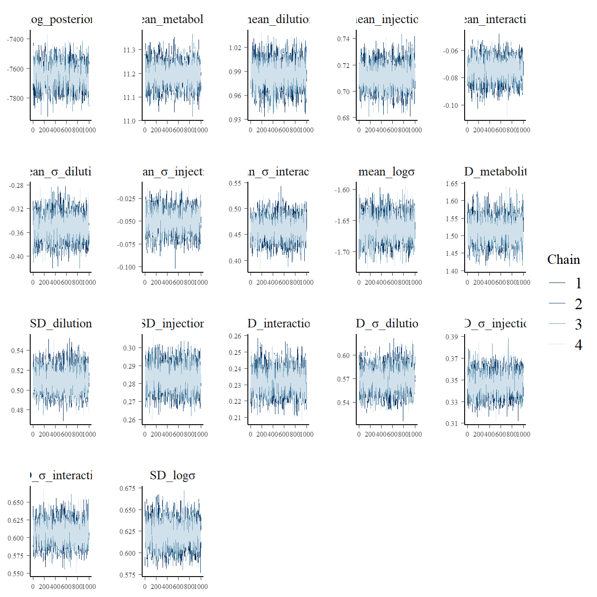
p12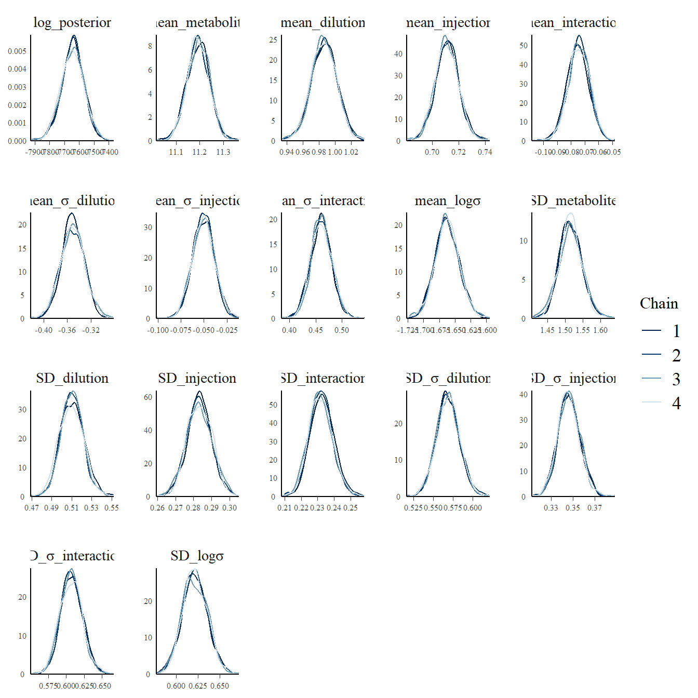
ggsave(filename = here::here(figures_dir, "trace-plots.png"), plot = p11, width = 40, height = 15, dpi = 600, units = "cm")
ggsave(filename = here::here(figures_dir, "density-plots.png"), plot = p12, width = 40, height = 15, dpi = 600, units = "cm")pars = c("mean_dilution", "mean_injection", "mean_dilution_injection_interaction",
"mean_sigma_dilution", "mean_sigma_injection",
"mean_sigma_dilution_injection_interaction",
"sd_dilution", "sd_injection", "sd_dilution_injection_interaction",
"sd_sigma_dilution", "sd_sigma_injection",
"sd_sigma_dilution_injection_interaction",
"sd_log_sigma")
draws_df <- as_draws_df(model_to_plot$draws(pars))
parameter_labels2 <- intersect(names(draws_df), names(parameter_labels1))
draws_df <- draws_df %>%
rename_with(~ parameter_labels1[.x], .cols = parameter_labels2)
new_pars <- parameter_labels1[pars]
p21 = bayesplot::mcmc_areas(draws_df, pars = new_pars)
ggsave(filename = here::here(figures_dir, "parameter-interval-plots.png"), plot = p21, width = 12, height = 10, dpi = 600, units = "cm")
p21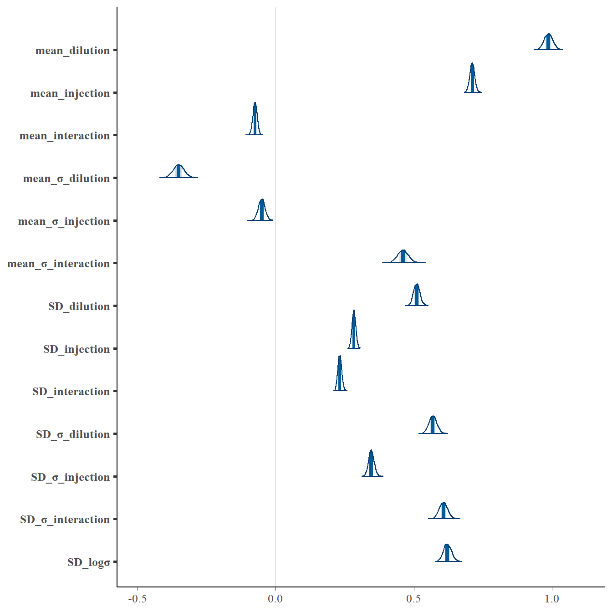
gc() used (Mb) gc trigger (Mb) max used (Mb)
Ncells 2598593 138.8 4578517 244.6 4578517 244.6
Vcells 1240826502 9466.8 3044123370 23224.9 2551280349 19464.8p301 <- posterior::as_draws_df(model_to_plot$draws("r_metabolite")) %>%
spread_draws(r_metabolite[metabolite_number]) %>%
ungroup() %>%
mutate(ionization_mode = if_else(metabolite_number <= 184,
"positive", "negative")) %>%
ggplot(aes(x = r_metabolite, fill = ionization_mode)) +
geom_histogram(bins = 40, alpha = 0.6, position = "identity") +
labs(x = expression("metabolite intercept"),
y = "count") +
theme(panel.grid = element_blank(),
axis.ticks.y = element_blank(),
axis.text.y = element_text(hjust = 1, size = 10),
legend.position = "none")
p302 <- posterior::as_draws_df(model_to_plot$draws("r_metabolite")) %>%
spread_draws(r_metabolite[metabolite_number]) %>%
ungroup() %>%
mutate(ionization_mode = if_else(metabolite_number <= 184,
"positive", "negative")) %>%
ggplot(aes(x = ionization_mode, y = r_metabolite, fill = ionization_mode)) +
geom_violin(alpha = 0.6, trim = FALSE) +
geom_boxplot(width = 0.1, outlier.size = 0.5) +
labs(x = NULL, y = expression("metabolite intercept")) +
theme(panel.grid = element_blank(),
axis.ticks.y = element_blank(),
axis.text.y = element_text(hjust = 1, size = 10))
p30 <- p301 + p302 + plot_layout(ncol = 2, widths = c(2, 1))
ggsave(filename = here::here(figures_dir, "metabolite-intercepts.png"),
plot = p30, width = 14, height = 10, dpi = 2000, units = "cm")
p30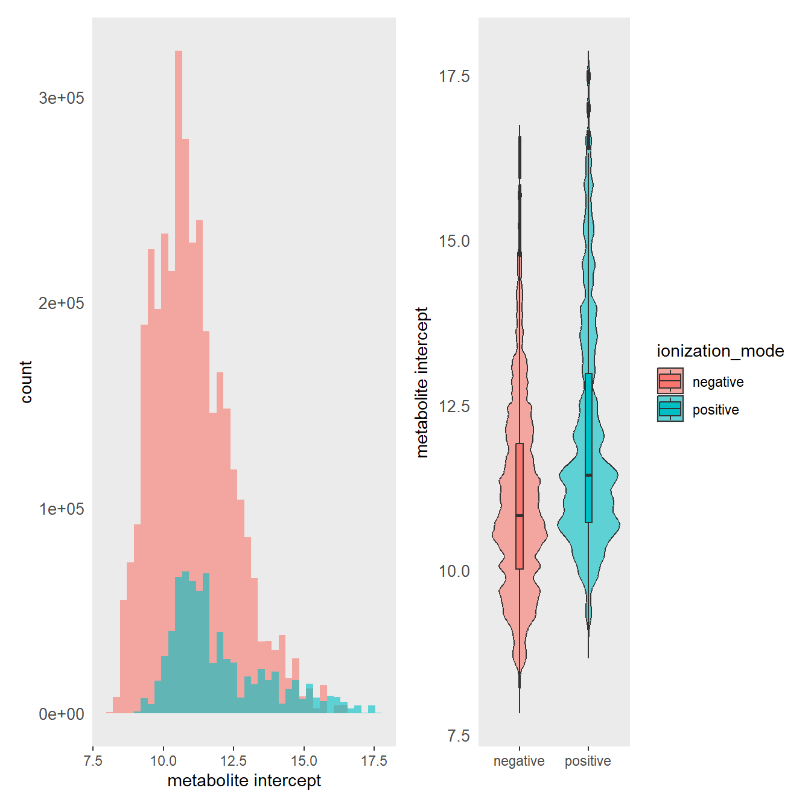
gc() used (Mb) gc trigger (Mb) max used (Mb)
Ncells 2670940 142.7 4578517 244.6 4578517 244.6
Vcells 1280993849 9773.3 3044123370 23224.9 2551280349 19464.8p31 <- posterior::as_draws_df(model_to_plot$draws("r_metabolite")) %>%
spread_draws(r_metabolite[metabolite_number]) %>%
ungroup() %>%
mutate(ionization_mode = if_else(metabolite_number <= 184,
"positive", "negative")) %>%
ggplot(aes(x = r_metabolite, y = reorder(metabolite_number, r_metabolite),
color = ionization_mode)) +
stat_pointinterval(.width = 0.5, size = 2/3) +
labs(x = expression("metabolite intercept"),
y = "metabolite number") +
theme(panel.grid = element_blank(),
axis.ticks.y = element_blank(),
axis.text.y = element_text(hjust = 1, size = 2))
ggsave(filename = here::here(figures_dir, "individual-metabolite-intercepts.png"),
plot = p31, width = 12, height = 10, dpi = 2000, units = "cm")
p31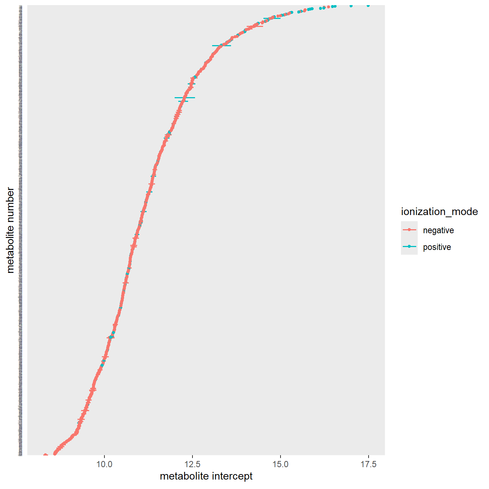
gc() used (Mb) gc trigger (Mb) max used (Mb)
Ncells 2750664 147 4578517 244.6 4578517 244.6
Vcells 1299569407 9915 3044123370 23224.9 2551280349 19464.8p321 <- posterior::as_draws_df(model_to_plot$draws("r_dilution")) %>%
spread_draws(r_dilution[metabolite_number]) %>%
ungroup() %>%
mutate(ionization_mode = if_else(metabolite_number <= 184,
"positive", "negative")) %>%
ggplot(aes(x = r_dilution, fill = ionization_mode)) +
geom_histogram(bins = 40, alpha = 0.6, position = "identity") +
labs(x = expression("dilution slopes"),
y = "count") +
theme(panel.grid = element_blank(),
axis.ticks.y = element_blank(),
axis.text.y = element_text(hjust = 1, size = 10),
legend.position = "none")
p322 <- posterior::as_draws_df(model_to_plot$draws("r_dilution")) %>%
spread_draws(r_dilution[metabolite_number]) %>%
ungroup() %>%
mutate(ionization_mode = if_else(metabolite_number <= 184,
"positive", "negative")) %>%
ggplot(aes(x = ionization_mode, y = r_dilution, fill = ionization_mode)) +
geom_violin(alpha = 0.6, trim = FALSE) +
geom_boxplot(width = 0.1, outlier.size = 0.5) +
labs(x = NULL, y = expression("dilution slopes")) +
theme(panel.grid = element_blank(),
axis.ticks.y = element_blank(),
axis.text.y = element_text(hjust = 1, size = 10))
p32 <- p321 + p322 + plot_layout(ncol = 2, widths = c(2, 1))
ggsave(filename = here::here(figures_dir, "dilution-slopes.png"),
plot = p32, width = 12, height = 10, dpi = 2000, units = "cm")
p32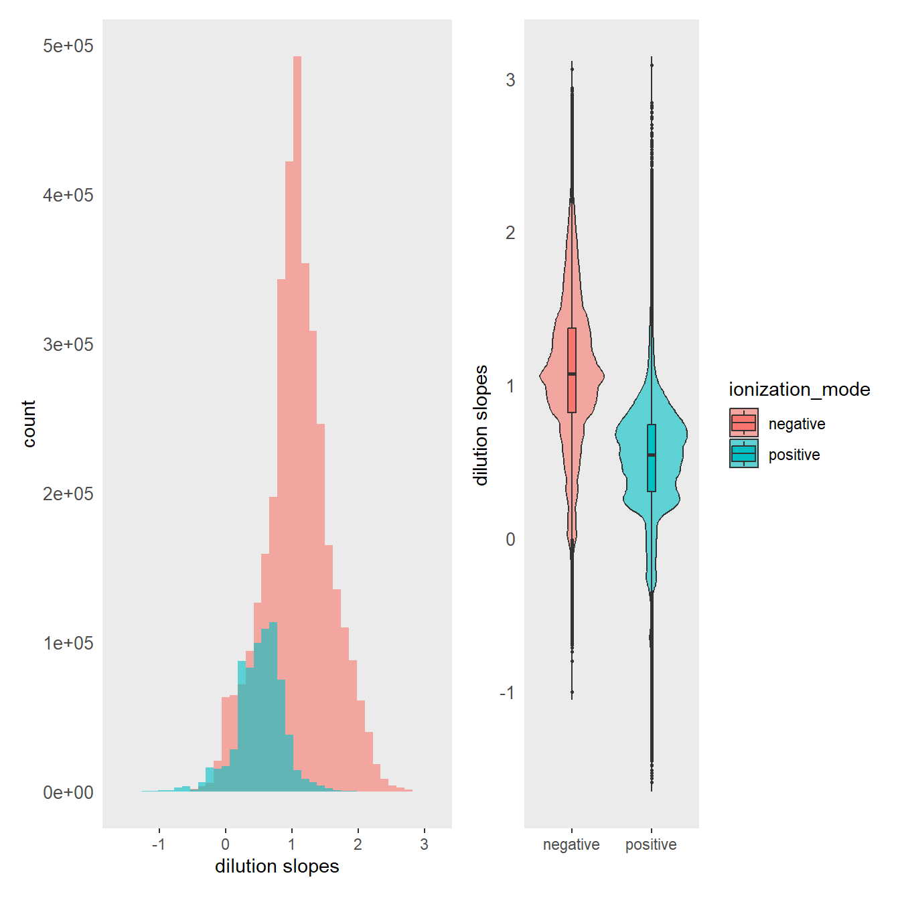
gc() used (Mb) gc trigger (Mb) max used (Mb)
Ncells 2785521 148.8 4578517 244.6 4578517 244.6
Vcells 1339781845 10221.8 3044123370 23224.9 2569796108 19606.0p33 <- posterior::as_draws_df(model_to_plot$draws("r_dilution")) %>%
spread_draws(r_dilution[metabolite_number]) %>%
ungroup() %>%
mutate(ionization_mode = if_else(metabolite_number <= 184,
"positive", "negative")) %>%
ggplot(aes(x = r_dilution, y = reorder(metabolite_number, r_dilution),
color = ionization_mode)) +
stat_pointinterval(.width = .5, size = 2/3) +
labs(x = expression("dilution slopes"),
y = "metabolite number") +
theme(panel.grid = element_blank(),
axis.ticks.y = element_blank(),
axis.text.y = element_text(hjust = 1, size = 2))
ggsave(filename = here::here(figures_dir, "individual-dilution-slopes.png"),
plot = p33, width = 12, height = 10, dpi = 2000, units = "cm")
p33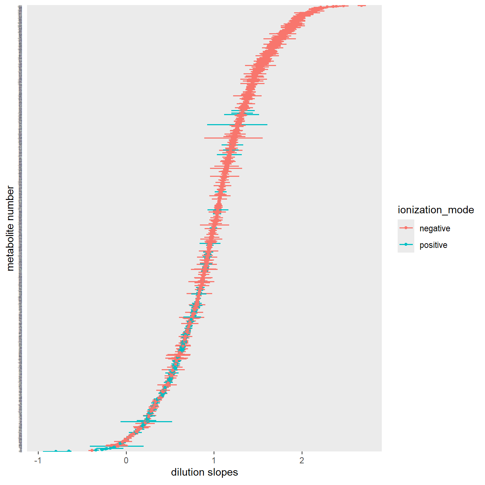
gc() used (Mb) gc trigger (Mb) max used (Mb)
Ncells 2805848 149.9 4578517 244.6 4578517 244.6
Vcells 1357968248 10360.5 3044123370 23224.9 2569796108 19606.0p341 <- posterior::as_draws_df(model_to_plot$draws("r_log_sigma")) %>%
spread_draws(r_log_sigma[metabolite_number]) %>%
ungroup() %>%
mutate(ionization_mode = if_else(metabolite_number <= 184,
"positive", "negative")) %>%
ggplot(aes(x = r_log_sigma, fill = ionization_mode)) +
geom_histogram(bins = 40, alpha = 0.6, position = "identity") +
labs(x = expression("log sigma"),
y = "count") +
theme(panel.grid = element_blank(),
axis.ticks.y = element_blank(),
axis.text.y = element_text(hjust = 0, size = 10),
legend.position = "none")
p342 <- posterior::as_draws_df(model_to_plot$draws("r_log_sigma")) %>%
spread_draws(r_log_sigma[metabolite_number]) %>%
ungroup() %>%
mutate(ionization_mode = if_else(metabolite_number <= 184,
"positive", "negative")) %>%
ggplot(aes(x = ionization_mode, y = r_log_sigma, fill = ionization_mode)) +
geom_violin(alpha = 0.6, trim = FALSE) +
geom_boxplot(width = 0.1, outlier.size = 0.5) +
labs(x = NULL, y = expression("log sigma")) +
theme(panel.grid = element_blank(),
axis.ticks.y = element_blank(),
axis.text.y = element_text(hjust = 1, size = 10))
p34 <- p341 + p342 + plot_layout(ncol = 2, widths = c(2, 1))
ggsave(filename = here::here(figures_dir, "log-sigma.png"),
plot = p34, width = 12, height = 10, dpi = 2000, units = "cm")
p34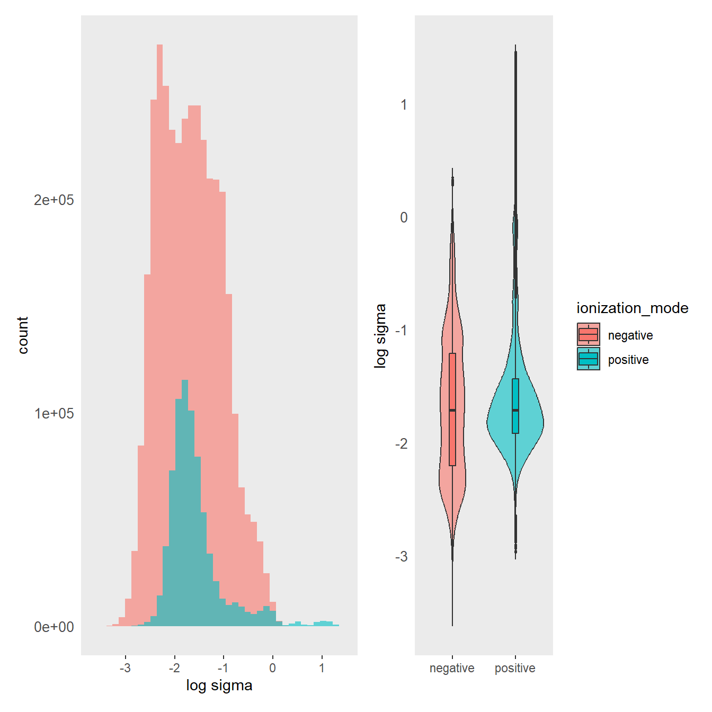
gc() used (Mb) gc trigger (Mb) max used (Mb)
Ncells 2840598 151.8 4578517 244.6 4578517 244.6
Vcells 1397231407 10660.1 3044123370 23224.9 2630336562 20067.9p35 <- posterior::as_draws_df(model_to_plot$draws("r_log_sigma")) %>%
spread_draws(r_log_sigma[metabolite_number]) %>%
ungroup() %>%
mutate(ionization_mode = if_else(metabolite_number <= 184,
"positive", "negative")) %>%
ggplot(aes(x = r_log_sigma, y = reorder(metabolite_number, r_log_sigma),
color = ionization_mode)) +
stat_pointinterval(.width = .5, size = 2/3) +
labs(x = expression("log sigma"),
y = "metabolite number") +
theme(panel.grid = element_blank(),
axis.ticks.y = element_blank(),
axis.text.y = element_text(hjust = 0, size = 2))
ggsave(filename = here::here(figures_dir, "individual-log-sigma.png"),
plot = p35, width = 12, height = 10, dpi = 2000, units = "cm")
p35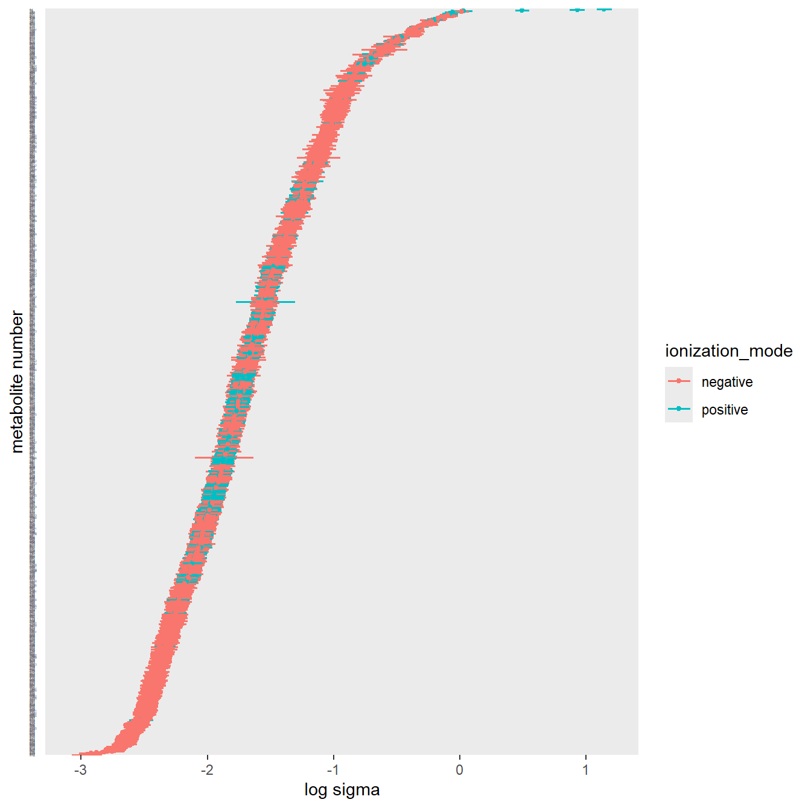
gc() used (Mb) gc trigger (Mb) max used (Mb)
Ncells 2860943 152.8 4578517 244.6 4578517 244.6
Vcells 1415081417 10796.3 3044123370 23224.9 2630336562 20067.9p361 <- posterior::as_draws_df(model_to_plot$draws("r_nu")) %>%
spread_draws(r_nu[metabolite_number]) %>%
ungroup() %>%
mutate(ionization_mode = if_else(metabolite_number <= 184,
"positive", "negative")) %>%
ggplot(aes(x = r_nu, fill = ionization_mode)) +
geom_histogram(bins = 40, alpha = 0.6, position = "identity") +
labs(x = expression("nu"),
y = "count") +
theme(panel.grid = element_blank(),
axis.ticks.y = element_blank(),
axis.text.y = element_text(hjust = 0, size = 10),
legend.position = "none")
p362 <- posterior::as_draws_df(model_to_plot$draws("r_nu")) %>%
spread_draws(r_nu[metabolite_number]) %>%
ungroup() %>%
mutate(ionization_mode = if_else(metabolite_number <= 184,
"positive", "negative")) %>%
ggplot(aes(x = ionization_mode, y = r_nu, fill = ionization_mode)) +
geom_violin(alpha = 0.6, trim = FALSE) +
geom_boxplot(width = 0.1, outlier.size = 0.5) +
labs(x = NULL, y = expression("nu")) +
theme(panel.grid = element_blank(),
axis.ticks.y = element_blank(),
axis.text.y = element_text(hjust = 1, size = 10))
p36 <- p361 + p362 + plot_layout(ncol = 2, widths = c(2, 1))
ggsave(filename = here::here(figures_dir, "nu.png"),
plot = p36, width = 12, height = 10, dpi = 2000, units = "cm")
p36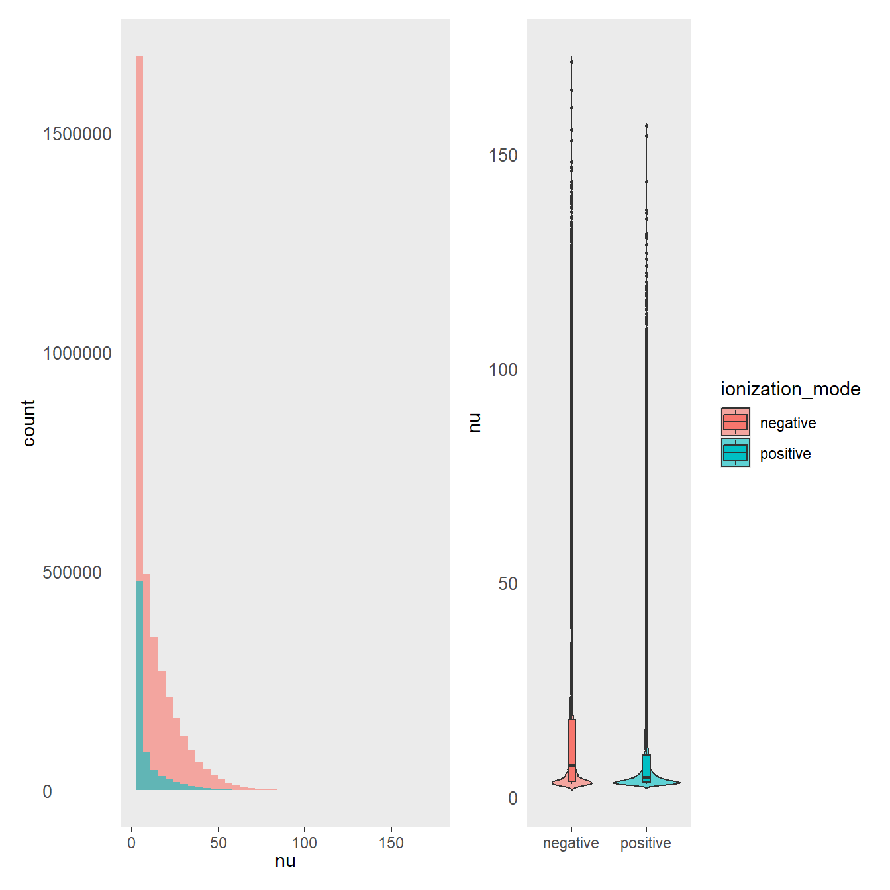
gc() used (Mb) gc trigger (Mb) max used (Mb)
Ncells 2895723 154.7 4578517 244.6 4578517 244.6
Vcells 1457460702 11119.6 3044123370 23224.9 2690565626 20527.4p37 <- posterior::as_draws_df(model_to_plot$draws("r_nu")) %>%
spread_draws(r_nu[metabolite_number]) %>%
mutate(ionization_mode = if_else(metabolite_number <= 184,
"positive", "negative")) %>%
ungroup() %>%
ggplot(aes(x = r_nu, y = reorder(metabolite_number, r_nu),
color = ionization_mode)) +
stat_pointinterval(.width = .5, size = 2/3) +
labs(x = expression("nu"),
y = "metabolite number") +
theme(panel.grid = element_blank(),
axis.ticks.y = element_blank(),
axis.text.y = element_text(hjust = 0, size = 2))
ggsave(filename = here::here(figures_dir, "individual-nu.png"),
plot = p37, width = 12, height = 10, dpi = 2000, units = "cm")
p37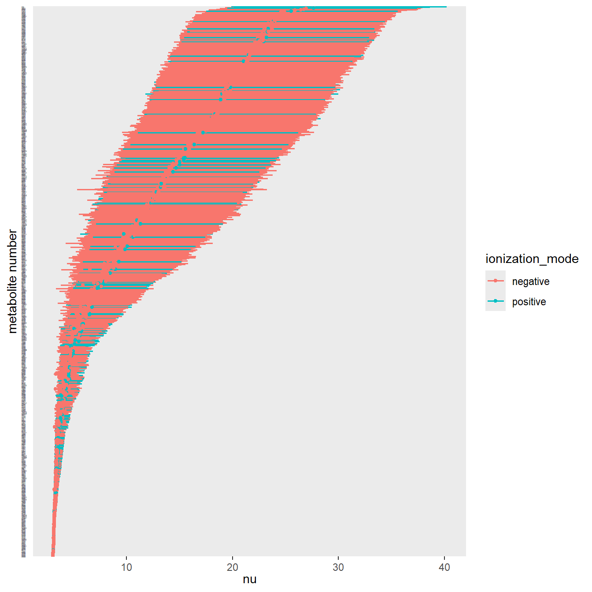
gc() used (Mb) gc trigger (Mb) max used (Mb)
Ncells 2915927 155.8 4578517 244.6 4578517 244.6
Vcells 1476700218 11266.4 3044123370 23224.9 2690565626 20527.4p381 <- posterior::as_draws_df(model_to_plot$draws("r_injection")) %>%
spread_draws(r_injection[metabolite_number]) %>%
ungroup() %>%
mutate(ionization_mode = if_else(metabolite_number <= 184,
"positive", "negative")) %>%
ggplot(aes(x = r_injection, fill = ionization_mode)) +
geom_histogram(bins = 40, alpha = 0.6, position = "identity") +
labs(x = expression("injection slopes"),
y = "count") +
theme(panel.grid = element_blank(),
axis.ticks.y = element_blank(),
axis.text.y = element_text(hjust = 0, size = 10),
legend.position = "none")
p382 <- posterior::as_draws_df(model_to_plot$draws("r_injection")) %>%
spread_draws(r_injection[metabolite_number]) %>%
ungroup() %>%
mutate(ionization_mode = if_else(metabolite_number <= 184,
"positive", "negative")) %>%
ggplot(aes(x = ionization_mode, y = r_injection, fill = ionization_mode)) +
geom_violin(alpha = 0.6, trim = FALSE) +
geom_boxplot(width = 0.1, outlier.size = 0.5) +
labs(x = NULL, y = expression("injection slopes")) +
theme(panel.grid = element_blank(),
axis.ticks.y = element_blank(),
axis.text.y = element_text(hjust = 1, size = 10))
p38 <- p381 + p382 + plot_layout(ncol = 2, widths = c(2, 1))
ggsave(filename = here::here(figures_dir, "injection-slopes.png"),
plot = p38, width = 12, height = 10, dpi = 2000, units = "cm")
p38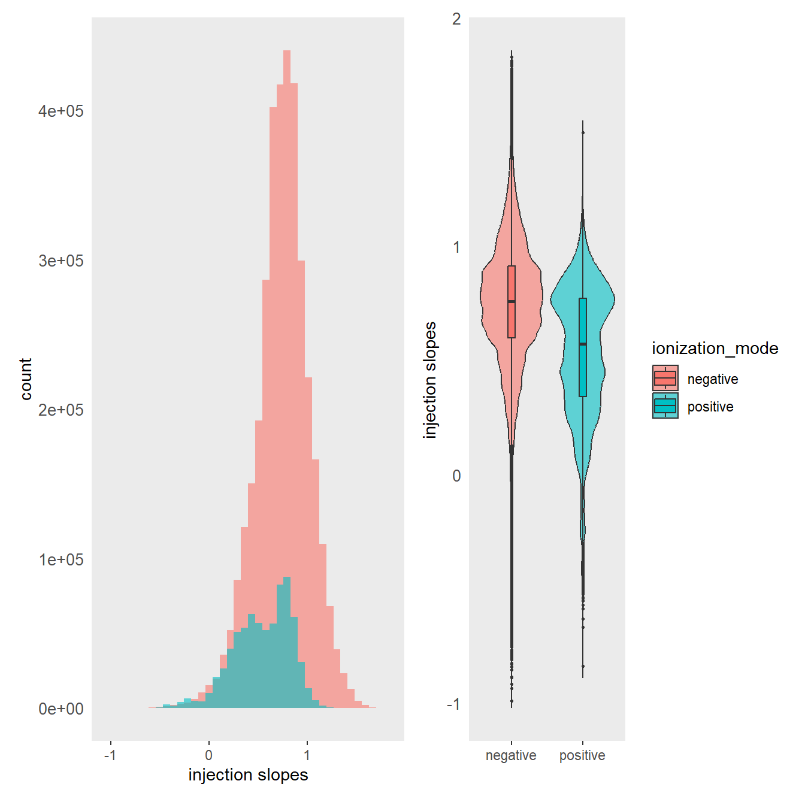
gc() used (Mb) gc trigger (Mb) max used (Mb)
Ncells 2950656 157.6 4578517 244.6 4578517 244.6
Vcells 1515419318 11561.8 3044123370 23224.9 2756563525 21031.0p39 <- posterior::as_draws_df(model_to_plot$draws("r_injection")) %>%
spread_draws(r_injection[metabolite_number]) %>%
ungroup() %>%
mutate(ionization_mode = if_else(metabolite_number <= 184,
"positive", "negative")) %>%
ggplot(aes(x = r_injection, y = reorder(metabolite_number, r_injection),
color = ionization_mode)) +
stat_pointinterval(.width = .5, size = 2/3) +
labs(x = expression("injection slopes"),
y = "metabolite number") +
theme(panel.grid = element_blank(),
axis.ticks.y = element_blank(),
axis.text.y = element_text(hjust = 0, size = 2))
ggsave(filename = here::here(figures_dir, "individual-injection-slopes.png"),
plot = p39, width = 12, height = 10, dpi = 2000, units = "cm")
p39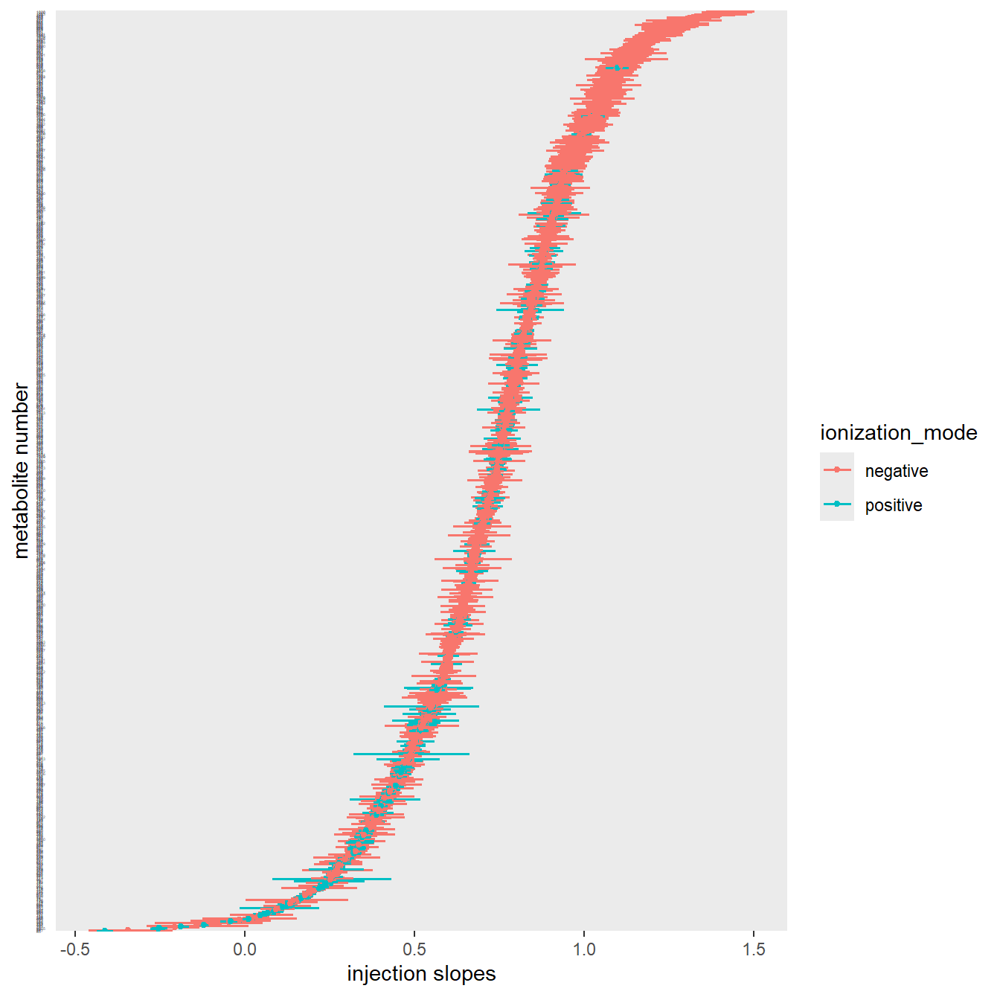
gc() used (Mb) gc trigger (Mb) max used (Mb)
Ncells 2970945 158.7 4578517 244.6 4578517 244.6
Vcells 1533523909 11699.9 3044123370 23224.9 2756563525 21031.0gc() used (Mb) gc trigger (Mb) max used (Mb)
Ncells 2716004 145.1 4578517 244.6 4578517 244.6
Vcells 1523918354 11626.6 3044123370 23224.9 2756563525 21031.0p411 <- posterior::as_draws_df(model_to_plot$draws("r_dilution_injection_interaction")) %>%
spread_draws(r_dilution_injection_interaction[metabolite_number]) %>%
ungroup() %>%
mutate(ionization_mode = if_else(metabolite_number <= 184,
"positive", "negative")) %>%
ggplot(aes(x = r_dilution_injection_interaction, fill = ionization_mode)) +
geom_histogram(bins = 40, alpha = 0.6, position = "identity") +
labs(x = expression("dilution and injection interaction slopes"),
y = "count") +
theme(panel.grid = element_blank(),
axis.ticks.y = element_blank(),
axis.text.y = element_text(hjust = 0, size = 10),
legend.position = "none")
p412 <- posterior::as_draws_df(model_to_plot$draws("r_dilution_injection_interaction")) %>%
spread_draws(r_dilution_injection_interaction[metabolite_number]) %>%
ungroup() %>%
mutate(ionization_mode = if_else(metabolite_number <= 184,
"positive", "negative")) %>%
ggplot(aes(x = ionization_mode, y = r_dilution_injection_interaction, fill = ionization_mode)) +
geom_violin(alpha = 0.6, trim = FALSE) +
geom_boxplot(width = 0.1, outlier.size = 0.5) +
labs(x = NULL, y = expression("dilution and injection interaction slopes")) +
theme(panel.grid = element_blank(),
axis.ticks.y = element_blank(),
axis.text.y = element_text(hjust = 1, size = 10))
p41 <- p411 + p412 + plot_layout(ncol = 2, widths = c(2, 1))
ggsave(filename = here::here(figures_dir, "dilution-injection-interaction-slopes.png"),
plot = p41, width = 12, height = 10, dpi = 2000, units = "cm")
p41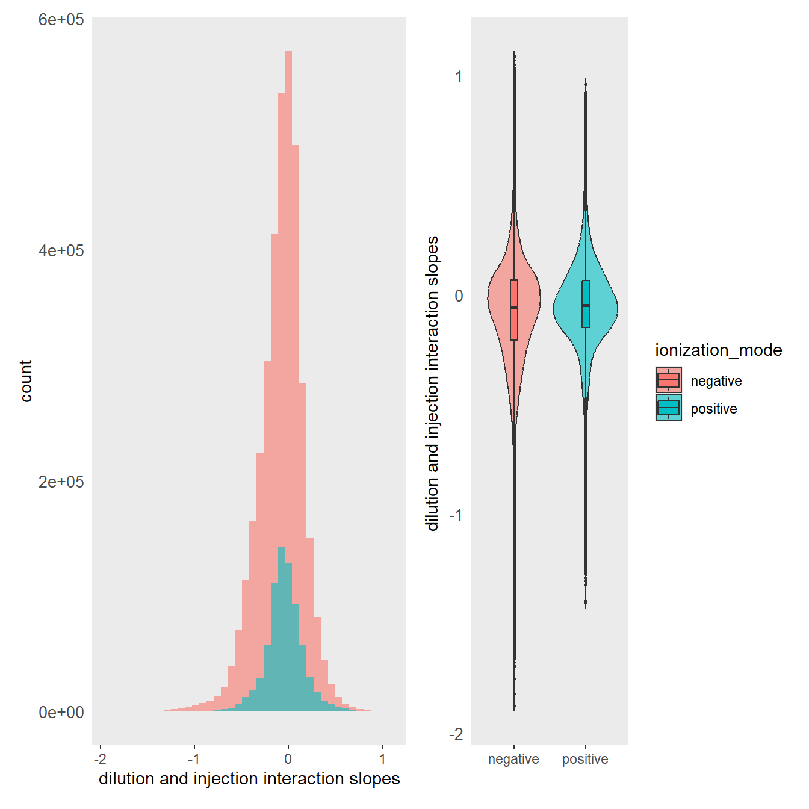
gc() used (Mb) gc trigger (Mb) max used (Mb)
Ncells 2736038 146.2 4578517 244.6 4578517 244.6
Vcells 1564973385 11939.8 3044123370 23224.9 2776652441 21184.2p42 <- posterior::as_draws_df(model_to_plot$draws("r_dilution_injection_interaction")) %>%
spread_draws(r_dilution_injection_interaction[metabolite_number]) %>%
ungroup() %>%
mutate(ionization_mode = if_else(metabolite_number <= 184,
"positive", "negative")) %>%
ggplot(aes(x = r_dilution_injection_interaction,
y = reorder(metabolite_number, r_dilution_injection_interaction),
color = ionization_mode)) +
stat_pointinterval(.width = .5, size = 2/3) +
labs(x = expression("dilution and injection interaction slopes"),
y = "metabolite number") +
theme(panel.grid = element_blank(),
axis.ticks.y = element_blank(),
axis.text.y = element_text(hjust = 0, size = 2))
ggsave(filename = here::here(figures_dir, "individual-dilution-injection-interaction-slopes.png"), plot = p42, width = 12, height = 10, dpi = 2000, units = "cm")
p42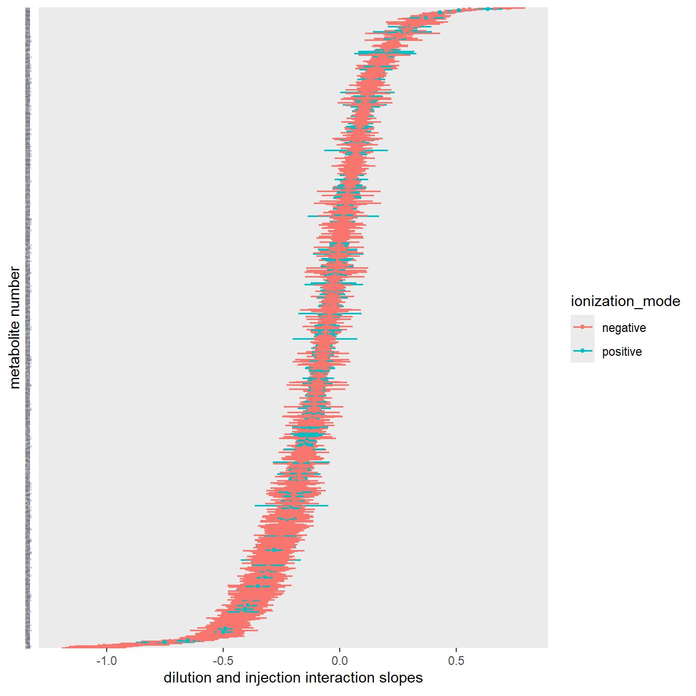
gc() used (Mb) gc trigger (Mb) max used (Mb)
Ncells 2775426 148.3 4578517 244.6 4578517 244.6
Vcells 1583433571 12080.7 3044123370 23224.9 2776652441 21184.2p431<-posterior::as_draws_df(model_to_plot$draws("r_metabolite")) %>%
spread_draws(r_metabolite[metabolite_number]) %>%
ungroup() %>%
mutate(ionization_mode = if_else(metabolite_number <= 184,
"positive", "negative")) %>%
group_by(metabolite_number, ionization_mode) %>%
summarise(mean_mu = mean(r_metabolite)) %>%
ggplot(aes(x = mean_mu, fill = ionization_mode)) +
geom_histogram(alpha = 0.2, position = "identity") +
labs(x = expression("metabolite intercepts"))
p432<-posterior::as_draws_df(model_to_plot$draws("r_dilution")) %>%
spread_draws(r_dilution[metabolite_number]) %>%
ungroup() %>%
mutate(ionization_mode = if_else(metabolite_number <= 184,
"positive", "negative")) %>%
group_by(metabolite_number, ionization_mode) %>%
summarise(mean_mu = mean(r_dilution)) %>%
ggplot(aes(x = mean_mu, fill = ionization_mode)) +
geom_histogram(alpha = 0.2, position = "identity") +
labs(x = expression("dilution slopes"))
p433<-posterior::as_draws_df(model_to_plot$draws("r_injection")) %>%
spread_draws(r_injection[metabolite_number]) %>%
ungroup() %>%
mutate(ionization_mode = if_else(metabolite_number <= 184,
"positive", "negative")) %>%
group_by(metabolite_number, ionization_mode) %>%
summarise(mean_mu = mean(r_injection)) %>%
ggplot(aes(x = mean_mu, fill = ionization_mode)) +
geom_histogram(alpha = 0.2, position = "identity") +
labs(x = expression("injection slopes"))
p434<-posterior::as_draws_df(model_to_plot$draws("r_dilution_injection_interaction")) %>%
spread_draws(r_dilution_injection_interaction[metabolite_number]) %>%
ungroup() %>%
mutate(ionization_mode = if_else(metabolite_number <= 184,
"positive", "negative")) %>%
group_by(metabolite_number, ionization_mode) %>%
summarise(mean_mu = mean(r_dilution_injection_interaction)) %>%
ggplot(aes(x = mean_mu, fill = ionization_mode)) +
geom_histogram(alpha = 0.2, position = "identity") +
labs(x = expression("dilution and injection interaction slopes"))
p441<-posterior::as_draws_df(model_to_plot$draws("r_log_sigma")) %>%
spread_draws(r_log_sigma[metabolite_number]) %>%
ungroup() %>%
mutate(ionization_mode = if_else(metabolite_number <= 184,
"positive", "negative")) %>%
group_by(metabolite_number, ionization_mode) %>%
summarise(mean_mu = mean(r_log_sigma)) %>%
ggplot(aes(x = mean_mu, fill = ionization_mode)) +
geom_histogram(alpha = 0.2, position = "identity") +
labs(x = expression("logsigmas"))
p442<-posterior::as_draws_df(model_to_plot$draws("r_nu")) %>%
spread_draws(r_nu[metabolite_number]) %>%
ungroup() %>%
mutate(ionization_mode = if_else(metabolite_number <= 184,
"positive", "negative")) %>%
group_by(metabolite_number, ionization_mode) %>%
summarise(mean_mu = mean(r_nu)) %>%
ggplot(aes(x = mean_mu, fill = ionization_mode)) +
geom_histogram(alpha = 0.2, position = "identity") +
labs(x = expression("nu"))
p443<-posterior::as_draws_df(model_to_plot$draws("r_sigma_dilution")) %>%
spread_draws(r_sigma_dilution[metabolite_number]) %>%
ungroup() %>%
mutate(ionization_mode = if_else(metabolite_number <= 184,
"positive", "negative")) %>%
group_by(metabolite_number, ionization_mode) %>%
summarise(mean_mu = mean(r_sigma_dilution)) %>%
ggplot(aes(x = mean_mu, fill = ionization_mode)) +
geom_histogram(alpha = 0.2, position = "identity") +
labs(x = expression("dilution sigmas"))
p444<-posterior::as_draws_df(model_to_plot$draws("r_sigma_injection")) %>%
spread_draws(r_sigma_injection[metabolite_number]) %>%
ungroup() %>%
mutate(ionization_mode = if_else(metabolite_number <= 184,
"positive", "negative")) %>%
group_by(metabolite_number, ionization_mode) %>%
summarise(mean_mu = mean(r_sigma_injection)) %>%
ggplot(aes(x = mean_mu, fill = ionization_mode)) +
geom_histogram(alpha = 0.2, position = "identity") +
labs(x = expression("injection sigmas"))
p445<-posterior::as_draws_df(model_to_plot$draws("r_sigma_dilution_injection_interaction")) %>%
spread_draws(r_sigma_dilution_injection_interaction[metabolite_number]) %>%
ungroup() %>%
mutate(ionization_mode = if_else(metabolite_number <= 184,
"positive", "negative")) %>%
group_by(metabolite_number, ionization_mode) %>%
summarise(mean_mu = mean(r_sigma_dilution_injection_interaction)) %>%
ggplot(aes(x = mean_mu, fill = ionization_mode)) +
geom_histogram(alpha = 0.2, position = "identity") +
labs(x = expression("dilution and injection interaction sigmas"))
p43 <- (p431 + p432)/(p433 + p434) + plot_layout(guides = 'collect')
p44 <- (p441 + p442 + p443)/(p444 + p445) + plot_layout(guides = 'collect')
ggsave(filename = here::here(figures_dir, "individual-histograms-main.png"),
plot = p43, width = 16, height = 16, dpi = 600, units = "cm")
ggsave(filename = here::here(figures_dir, "individual-histograms-rest.png"),
plot = p44, width = 16, height = 16, dpi = 600, units = "cm")
p43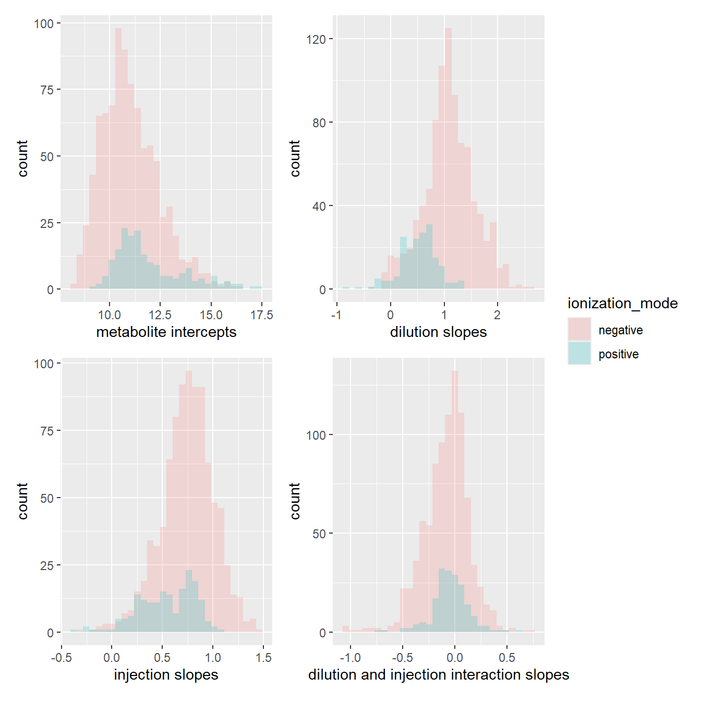
p44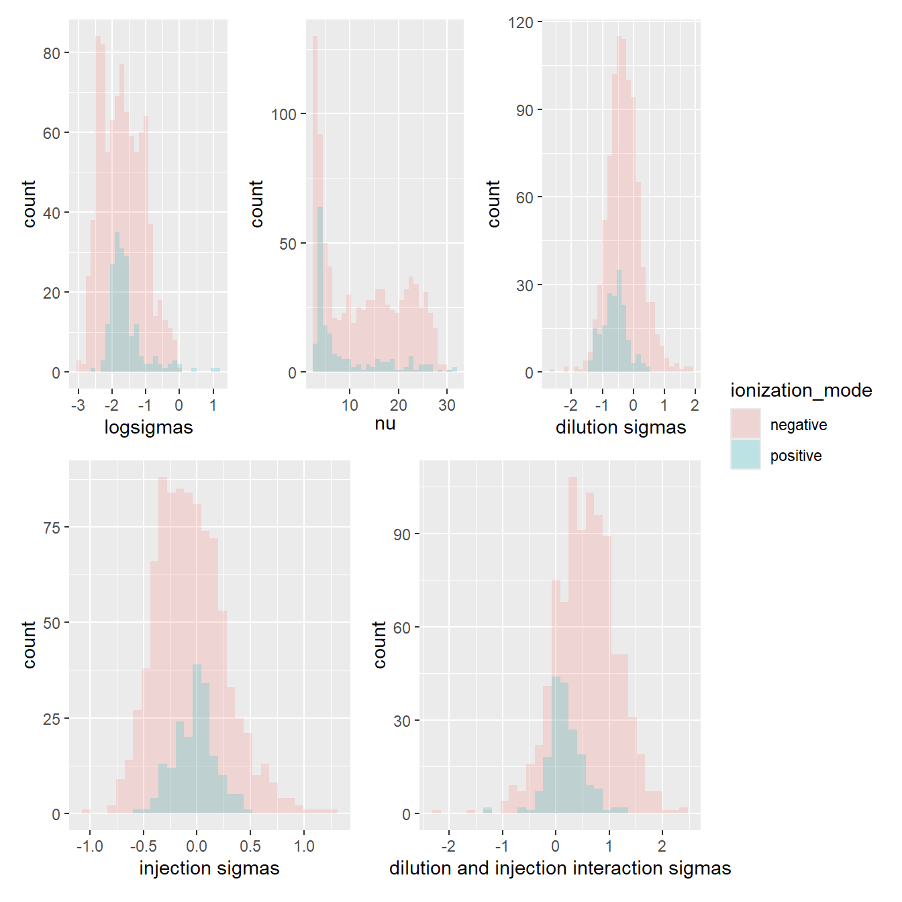
data51<-posterior::as_draws_df(model_to_plot$draws("r_metabolite")) %>%
spread_draws(r_metabolite[metabolite_number]) %>%
ungroup() %>%
group_by(metabolite_number) %>%
summarise(mean_metabolite = mean(r_metabolite))
data52<-posterior::as_draws_df(model_to_plot$draws("r_dilution")) %>%
spread_draws(r_dilution[metabolite_number]) %>%
ungroup() %>%
group_by(metabolite_number) %>%
summarise(mean_dilution = mean(r_dilution))
data53<-posterior::as_draws_df(model_to_plot$draws("r_injection")) %>%
spread_draws(r_injection[metabolite_number]) %>%
ungroup() %>%
group_by(metabolite_number) %>%
summarise(mean_injection = mean(r_injection))
data54<-posterior::as_draws_df(model_to_plot$draws("r_dilution_injection_interaction")) %>%
spread_draws(r_dilution_injection_interaction[metabolite_number]) %>%
ungroup() %>%
group_by(metabolite_number) %>%
summarise(mean_interaction = mean(r_dilution_injection_interaction))
data55<-posterior::as_draws_df(model_to_plot$draws("r_log_sigma")) %>%
spread_draws(r_log_sigma[metabolite_number]) %>%
ungroup() %>%
group_by(metabolite_number) %>%
summarise(mean_log_sigma = mean(r_log_sigma))
data56<-posterior::as_draws_df(model_to_plot$draws("r_nu")) %>%
spread_draws(r_nu[metabolite_number]) %>%
ungroup() %>%
mutate(ionization_mode = if_else(metabolite_number <= 184,
"positive", "negative")) %>%
group_by(metabolite_number, ionization_mode) %>%
summarise(mean_nu = mean(r_nu)) %>%
select(metabolite_number, mean_nu, ionization_mode)
data57 = cbind(data51, data52, data53, data54, data55, data56)
p51<-ggpairs(data57[, c(2, 4, 6, 8, 10, 12, 13)], columns = c(1:6),
labeller = "label_parsed",
aes(color = ionization_mode),
upper = list(continuous = wrap("cor", size = 2)),
lower = list(continuous = wrap("points", alpha = 0.3, size = 0.1),
combo = wrap("dot", alpha = 0.4, size = 0.2))) +
theme(axis.text = element_text(size = 5)) +
theme(strip.text.x = element_text(size = 5)) +
theme(strip.text.y = element_text(size = 5))
ggsave(filename = here::here(figures_dir, "individual-pairs-plot.png"),
plot = p51, width = 12, height = 16, dpi = 600, units = "cm")
p51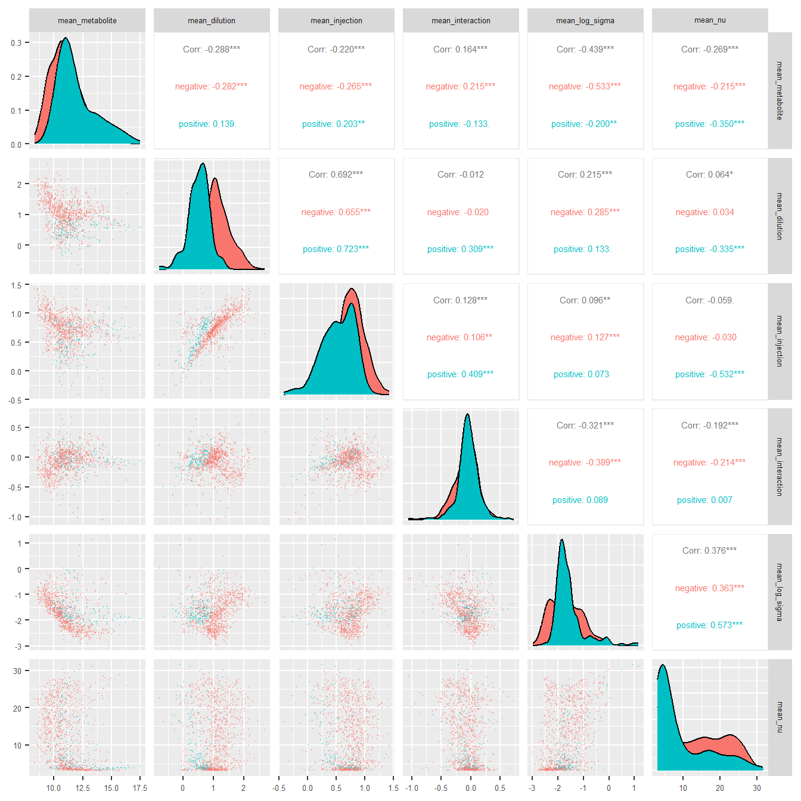
data56 %>% group_by(ionization_mode) %>%
summarize(mean(as.numeric(mean_nu<=10)))# A tibble: 2 × 2
ionization_mode `mean(as.numeric(mean_nu <= 10))`
<chr> <dbl>
1 negative 0.447
2 positive 0.685data56 %>% group_by(ionization_mode) %>%
summarize(mean(as.numeric(mean_nu<=5)))# A tibble: 2 × 2
ionization_mode `mean(as.numeric(mean_nu <= 5))`
<chr> <dbl>
1 negative 0.275
2 positive 0.457model_prediction_plots <- function(data_pred_split, data_long_split){
p61 <- data_pred_split %>%
tidyr::expand_grid(dilution_factor = c(0.25, 0.50, 1), injection_volume = c(2, 5, 10)) %>%
ungroup() %>%
mutate(logsigma = r_log_sigma +
r_sigma_dilution*log(dilution_factor/0.5) +
r_sigma_injection*log(injection_volume/5) +
r_sigma_dilution_injection_interaction*log(injection_volume/5)*log(dilution_factor/0.5)) %>%
mutate(ypred1 = r_metabolite +
r_dilution*log(dilution_factor/0.5) +
r_injection*log(injection_volume/5) +
r_dilution_injection_interaction*log(injection_volume/5)*log(dilution_factor/0.5)) %>%
mutate(ypred2 = r_metabolite +
r_dilution*log(dilution_factor/0.5) +
r_injection*log(injection_volume/5) +
r_dilution_injection_interaction*log(injection_volume/5)*log(dilution_factor/0.5) +
exp(logsigma)*rt(n(), r_nu)) %>%
mutate(log_injection_quantity = log(dilution_factor) + log(injection_volume)) %>%
ggplot(aes(x = log_injection_quantity)) +
ggdist::stat_lineribbon(aes(y = ypred2, color = ordered(dilution_factor),
fill = ordered(dilution_factor)),
.width = c(.90), alpha = 0.75) +
ggdist::stat_lineribbon(aes(y = ypred1, color = ordered(dilution_factor),
fill = ordered(dilution_factor)),
.width = c(.90), alpha = 0.25) +
geom_jitter(data = data_long_split, aes(x = log_injection_quantity,
y = log_intensity,
color = ordered(dilution_factor)),
alpha = 0.75, width = 0.05, height = 0) +
facet_wrap(.~metabolite_number_org) +
labs(x = "Injection quantity (log scale)", y = "Signal intensity (log scale)")
return(p61)
}
xdata <- readr::read_csv(here::here("data", "derived", "data-posneg.csv"))
relabeled_metabolite_numbers <- data.frame(
metabolite_number = match(xdata$metabolite_number,
unique(xdata$metabolite_number)),
metabolite_number_org = xdata$metabolite_number) %>%
distinct()
data_pred_split <- posterior::as_draws_df(model_to_plot$draws(c("r_metabolite", "r_dilution", "r_injection", "r_dilution_injection_interaction", "r_log_sigma", "r_sigma_dilution", "r_sigma_injection", "r_sigma_dilution_injection_interaction", "r_nu"))) %>%
tidybayes::spread_draws(r_metabolite[metabolite_number],
r_dilution[metabolite_number],
r_injection[metabolite_number],
r_dilution_injection_interaction[metabolite_number],
r_log_sigma[metabolite_number],
r_sigma_dilution[metabolite_number],
r_sigma_injection[metabolite_number],
r_sigma_dilution_injection_interaction[metabolite_number],
r_nu[metabolite_number]) %>%
ungroup() %>%
left_join(relabeled_metabolite_numbers) %>%
mutate(PLOTS = ids_per_plot(metabolite_number_org, 9)) %>% # 9 per subplot
split(.[["PLOTS"]])
data_long_x <- data_long
data_long_x$metabolite_number_org <- data_long_x$metabolite_number
data_long_split <- data_long_x %>%
mutate(PLOTS = ids_per_plot(metabolite_number_org, 9)) %>% # 9 per subplot
split(.[["PLOTS"]])
plots_by_id <- purrr::map2(data_pred_split,
data_long_split,
function(x, y) model_prediction_plots(x, y))
rm(data_long_x)
# save to single pdf file
ggsave(
filename = "fits.pdf",
plot = marrangeGrob(plots_by_id, nrow = 1, ncol = 1, top = NULL),
path = figures_dir)
# few examples
plots_by_id[20]$`20`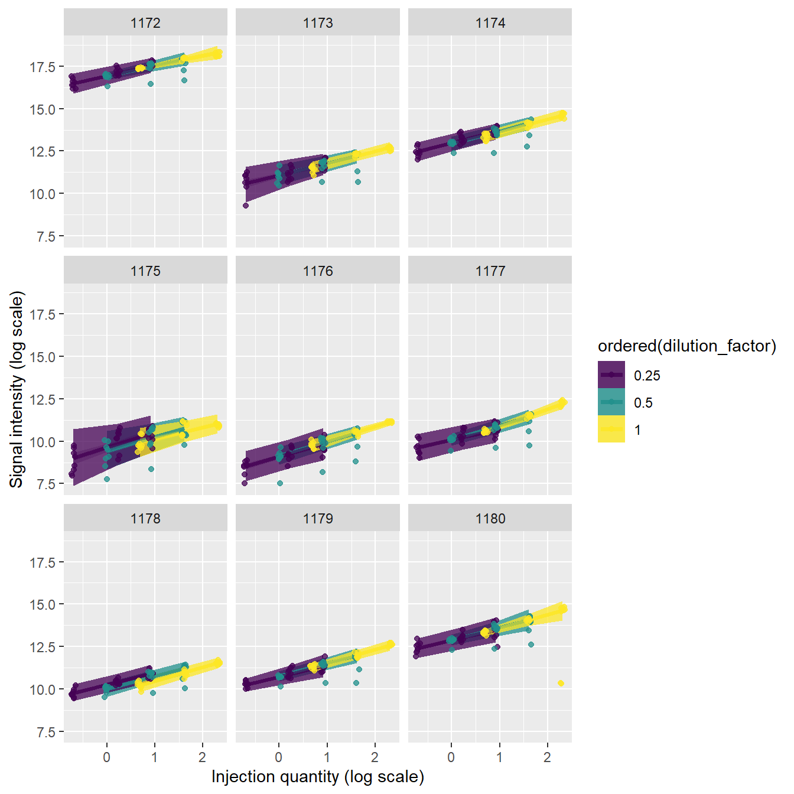
plots_by_id[23]$`23`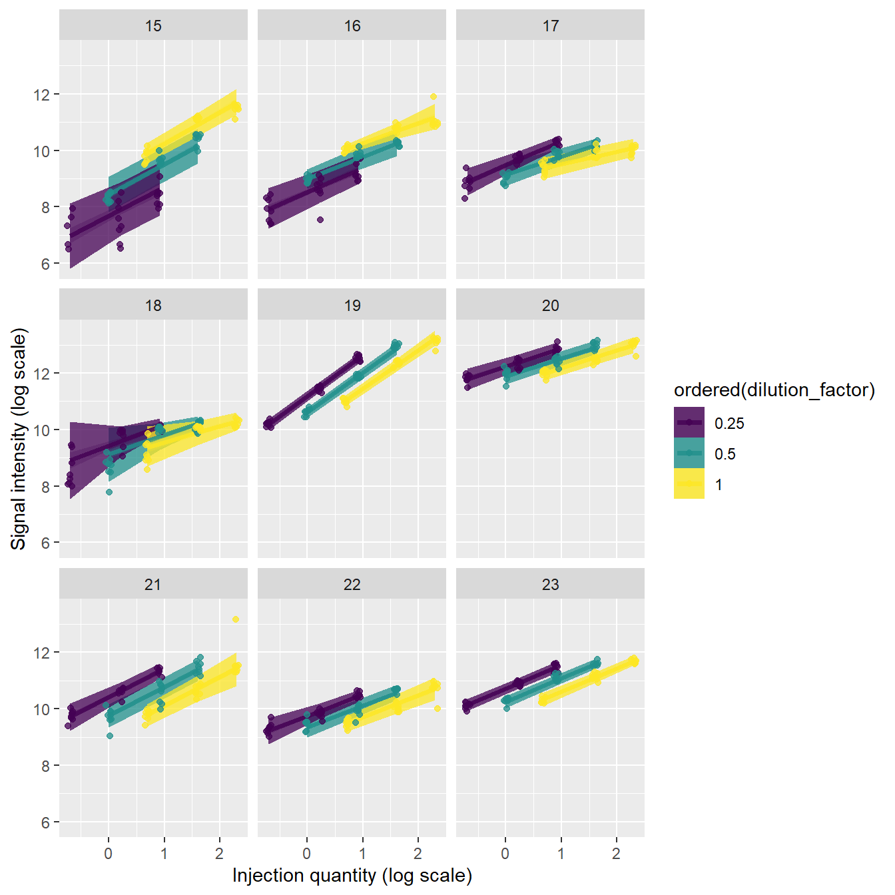
plots_by_id[121]$`121`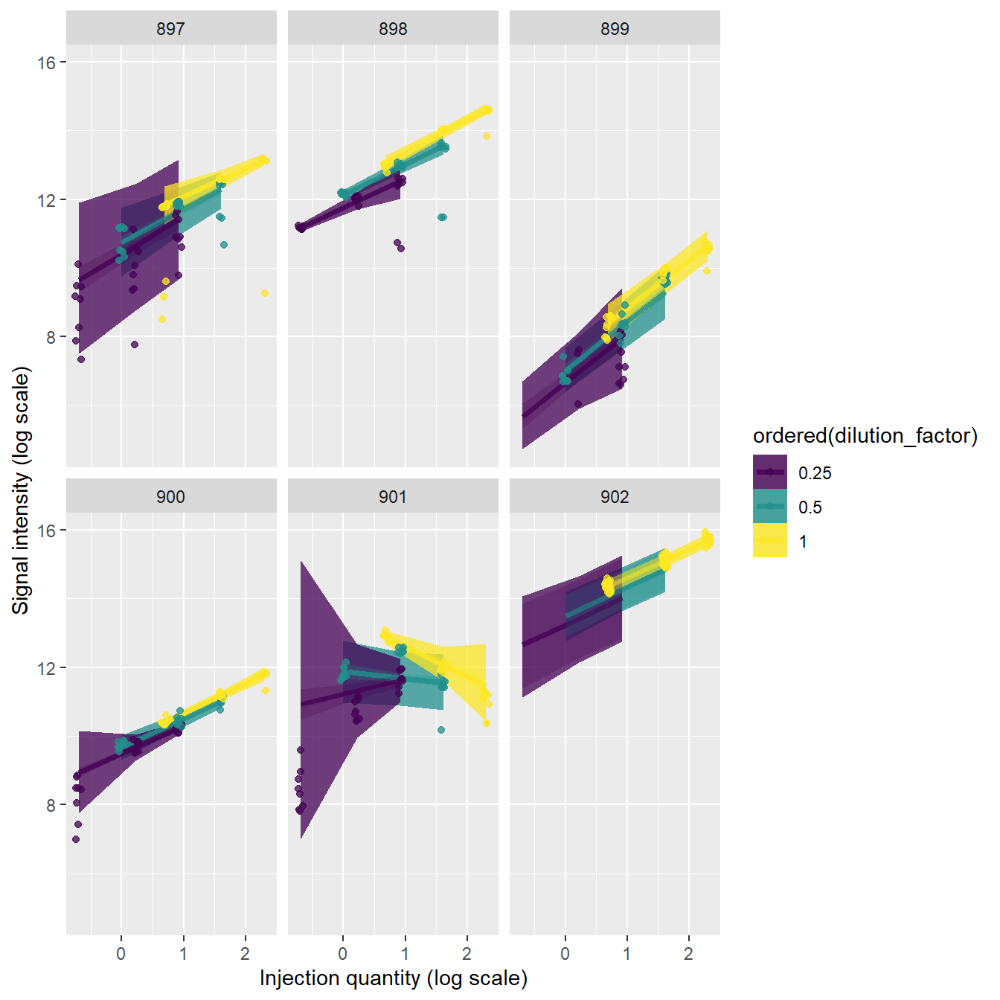
temp <- posterior::as_draws_df(model_to_plot_gq$draws())
Y_predicted <- apply(temp[, which(colnames(temp) %in% grep("^Ypred", names(temp), value = TRUE))], MARGIN = 2, FUN = quantile, probs = c(.05, .5, .95))
weighted_residuals <- apply(temp[, which(colnames(temp) %in% grep("^wres", names(temp), value = TRUE))], MARGIN = 2, FUN = quantile, probs = c(.05, .5, .95))
Y_predicted <- as.data.frame(t(Y_predicted))
weighted_residuals <- as.data.frame(t(weighted_residuals))
data_long$median_Y_predicted = Y_predicted$`50%`
data_long$median_weighted_residuals = weighted_residuals$`50%`
p71 <- ggplot(data_long, aes(x = log_intensity,
y = median_Y_predicted,
color = as.factor(metabolite_number))) +
geom_point(size = 0.5, alpha = 0.25) +
xlab("Observed Y") +
ylab("Predicted Y") +
theme(legend.position = "none") +
geom_abline(intercept = 0, slope = 1, color = "grey", linetype = "dotted")
p72 <- ggplot(data_long, aes(x = chromatogram_number,
y = median_weighted_residuals,
color = as.factor(metabolite_number))) +
geom_point(size = 0.5, alpha = 0.25) +
xlab("Measurement order") +
ylab("Weighted Residuals") +
theme(legend.position = "none") +
geom_abline(intercept = 0, slope = 0, color = "grey", linetype = "dotted")
p73 <- ggplot(data_long, aes(x = median_Y_predicted,
y = median_weighted_residuals,
color = as.factor(metabolite_number))) +
geom_point(size = 0.5, alpha = 0.25) +
xlab("Predictions") +
ylab("Weighted Residuals") +
theme(legend.position = "none") +
geom_abline(intercept = 0, slope = 0, color = "grey", linetype = "dotted")
p74 <- ggplot(data_long, aes(x = log_injection_quantity,
y = median_weighted_residuals,
color = as.factor(metabolite_number))) +
geom_point(size = 0.5, alpha = 0.25) +
xlab("log(injection*dilution") +
ylab("Weighted Residuals") +
theme(legend.position = "none") +
geom_abline(intercept = 0, slope = 0, color = "grey", linetype = "dotted")
pall71 <- (p71 + p72)/(p73 + p74)
ggsave(filename = here::here(figures_dir, "goodness_of_fit.png"),
plot = pall71, width = 12, height = 16, dpi = 600, units = "cm")
pall71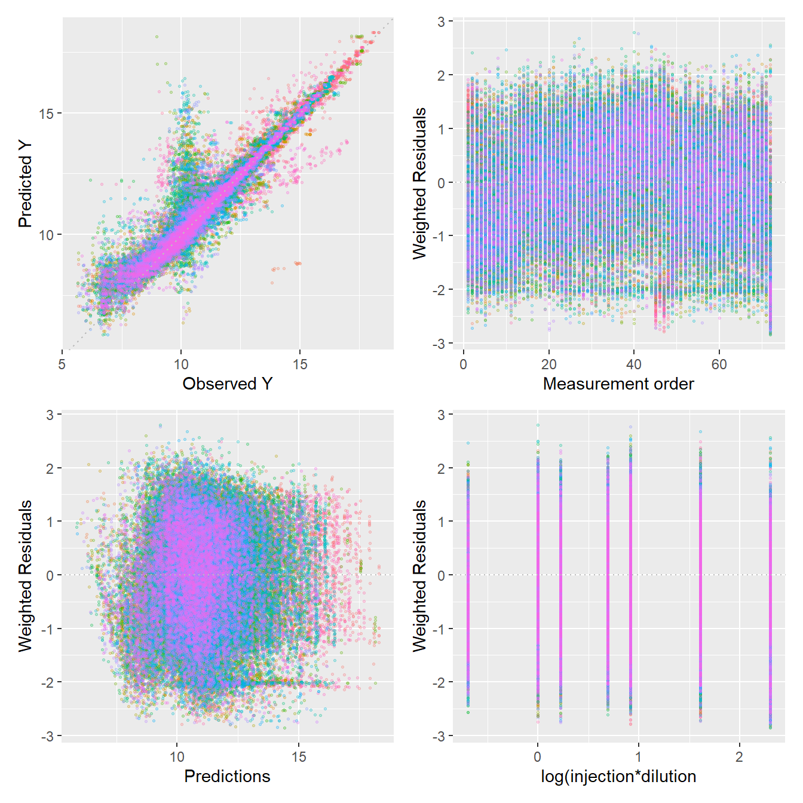
plot_residuals_by_id1 <- function(data_residuals_split){
plot <- data_residuals_split %>%
ggplot(aes(x = log_injection_quantity,
y = median_weighted_residuals,
shape = as.factor(replicate),
color = as.factor(injection_volume))) +
geom_jitter(height = 0, width = 0.025) +
labs(x = expression("injection quantity(injection volume * dilution factor on log scale)"),
y = "weighted residuals",
color = "injection_volume",
shape = "replicate") +
theme_bw() +
facet_wrap(.~metabolite_number)
return(plot)
}
data_residuals_split <- data_long %>%
mutate(PLOTS = ids_per_plot(metabolite_number, 9)) %>% # 9 per subplot
split(.[["PLOTS"]])
residuals_by_id <- purrr::map(data_residuals_split,
function(x) plot_residuals_by_id1(x))
# save to single pdf file
ggsave(
filename = "residuals1.pdf",
plot = marrangeGrob(residuals_by_id, nrow = 1, ncol = 1, top = NULL),
path = figures_dir)
# few examples
residuals_by_id[1]
residuals_by_id[3]
plot_residuals_by_id2 <- function(data_residuals_split){
plot <- data_residuals_split %>%
ggplot(aes(x = chromatogram_number, y = median_weighted_residuals, shape = as.factor(replicate), color = as.factor(injection_volume))) +
geom_jitter(height = 0, width = 0.025) +
labs(x = expression("order of acquisition"),
y = "weighted_residuals",
color = "injection volume",
shape = "replicate") +
theme_bw() +
facet_wrap(.~metabolite_number)
return(plot)
}
residuals_by_id2 <- purrr::map(data_residuals_split,
function(x) plot_residuals_by_id2(x))
# save to single pdf file
ggsave(
filename = "residuals2.pdf",
plot = marrangeGrob(residuals_by_id2, nrow = 1, ncol = 1, top = NULL),
path = figures_dir)
residuals_by_id2[21]
residuals_by_id2[121]# Median weighted residuals by dilution factor
p81 <- data_long %>%
group_by(chromatogram_number,
dilution_factor,
replicate,
injection_volume,
ionization_mode) %>%
summarise(median_median_weighted_residuals =
median(median_weighted_residuals), .groups = "drop") %>%
ggplot(aes(x = dilution_factor,
y = median_median_weighted_residuals,
shape = as.factor(replicate),
color = as.factor(injection_volume))) +
geom_jitter(height = 0,
width = 0.025) +
labs(x = "Dilution factor",
y = "Median of median weighted residuals",
color = "Injection volume",
shape = "Replicate") +
theme_bw() +
facet_wrap(.~ionization_mode)
p81
#Median residuals by chromatogram number
p82 <- data_long %>%
group_by(chromatogram_number,
dilution_factor,
replicate,
injection_volume,
ionization_mode) %>%
summarise(median_median_weighted_residuals =
median(median_weighted_residuals), .groups = "drop") %>%
ggplot() +
geom_point(aes(x = chromatogram_number,
y = median_median_weighted_residuals,
shape = as.factor(injection_volume),
color = as.factor(dilution_factor))) +
geom_line(aes(x = chromatogram_number,
y = median_median_weighted_residuals),
color = "gray") +
labs(x = "Chromatogram number",
y = "Median of median weighted residuals",
color = "Dilution factor",
shape = "Injection volume") +
theme_bw() +
facet_wrap(.~ionization_mode)
p82
#Median residuals by internal standard
p83 <- data_long %>%
group_by(chromatogram_number,
dilution_factor,
replicate,
injection_volume,
internal_standard,
ionization_mode) %>%
summarize(median_median_weighted_residuals =
median(median_weighted_residuals), .groups = "drop") %>%
mutate(log_internal_standard =
log(internal_standard)) %>%
ggplot() +
geom_point(aes(x = log_internal_standard,
y = median_median_weighted_residuals,
shape = as.factor(injection_volume),
color = as.factor(dilution_factor))) +
geom_line(aes(x = log_internal_standard,
y = median_median_weighted_residuals),
color = "gray") +
labs(x = "Log of internal standard intensity",
y = "Median of median weighted residuals of internal standard",
color = "dilution factor",
shape = "injection volume") +
theme_bw() +
facet_wrap(.~ionization_mode)
p83
#Save the plots
ggsave(filename = here::here(figures_dir,
"median-weighted-residuals-dilution.png"),
plot = p81, width = 12, height = 16, dpi = 600, units = "cm")
ggsave(filename = here::here(figures_dir,
"median-weighted-residuals-order.png"),
plot = p82, width = 12, height = 16, dpi = 600, units = "cm")
ggsave(filename = here::here(figures_dir,
"median-weighted-residuals-internal-standard.png"),
plot = p83, width = 12, height = 16, dpi = 600, units = "cm")plot <- posterior::as_draws_df(model_to_plot$draws(c("r_metabolite", "r_dilution", "r_injection", "r_dilution_injection_interaction", "r_log_sigma", "r_nu"))) %>%
tidybayes::spread_draws(r_metabolite[metabolite_number],
r_dilution[metabolite_number],
r_injection[metabolite_number],
r_dilution_injection_interaction[metabolite_number],
r_log_sigma[metabolite_number],
r_nu[metabolite_number]) %>%
ungroup() %>%
tidyr::expand_grid(dilution_factor = seq(0.25, 1, length.out = 6),
injection_volume = c(2, 5, 10)) %>%
ungroup() %>%
mutate(ionization_mode = if_else(metabolite_number <= 184,
"positive", "negative")) %>%
mutate(Y_predicted = r_metabolite +
r_dilution*log(dilution_factor/0.5) +
r_injection*log(injection_volume/5) +
r_dilution_injection_interaction*log(injection_volume/5)*log(dilution_factor/0.5)) %>%
group_by(metabolite_number,
dilution_factor,
injection_volume,
ionization_mode) %>%
summarise(mean_Y_predicted = mean(Y_predicted)) %>%
ggplot(aes(x = dilution_factor, y = mean_Y_predicted, color = as.factor(metabolite_number))) +
geom_line() +
facet_grid(injection_volume~ionization_mode) +
labs(x = "Dilution factor",
y = "Predicted intensity (log scale)") +
theme(legend.position = "none")
plot
ggsave(filename = here::here(figures_dir, "simulations.png"), plot = plot, width = 12, height = 16, dpi = 600, units = "cm")#Generate simulations matrix
gc() used (Mb) gc trigger (Mb) max used (Mb)
Ncells 3192684 170.6 6711817 358.5 6711817 358.5
Vcells 3013359307 22990.2 5260536382 40134.8 4284294299 32686.6 simulation_data <- posterior::as_draws_df(model_to_plot$draws(c("r_metabolite",
"r_dilution",
"r_injection",
"r_dilution_injection_interaction",
"r_log_sigma",
"r_nu"))) %>%
tidybayes::spread_draws(r_metabolite[metabolite_number],
r_dilution[metabolite_number],
r_injection[metabolite_number],
r_dilution_injection_interaction[metabolite_number],
r_log_sigma[metabolite_number],
r_nu[metabolite_number])
gc() used (Mb) gc trigger (Mb) max used (Mb)
Ncells 3193801 170.6 6711817 358.5 6711817 358.5
Vcells 3050285001 23271.9 5260536382 40134.8 4284294299 32686.6 simulation_data <- simulation_data %>%
ungroup() %>%
tidyr::expand_grid(dilution_factor = seq(0.25, 1, length.out = 10),
injection_volume = seq(2.5, 10, length.out = 10)) %>%
mutate(ionization_mode = if_else(metabolite_number <= 184,
"positive", "negative")) %>%
mutate(log_dilution = log(dilution_factor/0.5)) %>%
mutate(log_injection = log(injection_volume/5)) %>%
mutate(slope_dilution = r_dilution +
r_dilution_injection_interaction*log_injection) %>%
mutate(slope_injection = r_injection +
r_dilution_injection_interaction*log_dilution)
gc() used (Mb) gc trigger (Mb) max used (Mb)
Ncells 3192719 170.6 6711817 358.5 6711817 358.5
Vcells 9529359391 72703.3 13985540259 106701.3 9566307374 72985.2# write.csv(simulation_data, file = here::here(data_derived_dir, "simulation_data.csv"))
#Evaluation of slopes
p91 <- simulation_data %>%
group_by(metabolite_number, log_dilution, log_injection, ionization_mode) %>%
summarise(mean_slope_dilution = mean(slope_dilution),
mean_slope_injection = mean(slope_injection)) %>%
group_by(log_dilution, log_injection, ionization_mode) %>%
summarise(mean_of_means_slope_dilution = mean(mean_slope_dilution),
mean_of_means_slope_injection = mean(mean_slope_injection),
magnitude = sqrt(mean_of_means_slope_dilution^2 +
mean_of_means_slope_injection^2)) %>%
ggplot(aes(x = log_dilution, y = log_injection)) +
geom_segment(aes(xend = log_dilution + 0.1*mean_of_means_slope_dilution,
yend = log_injection + 0.1*mean_of_means_slope_injection,
color = magnitude),
arrow = arrow(length = unit(0.15, "cm")), size = 0.5) +
scale_color_viridis_c() +
labs(x = "Dilution (log scale)", y = "Injection Volume (log scale)") +
facet_grid(.~ionization_mode)
p91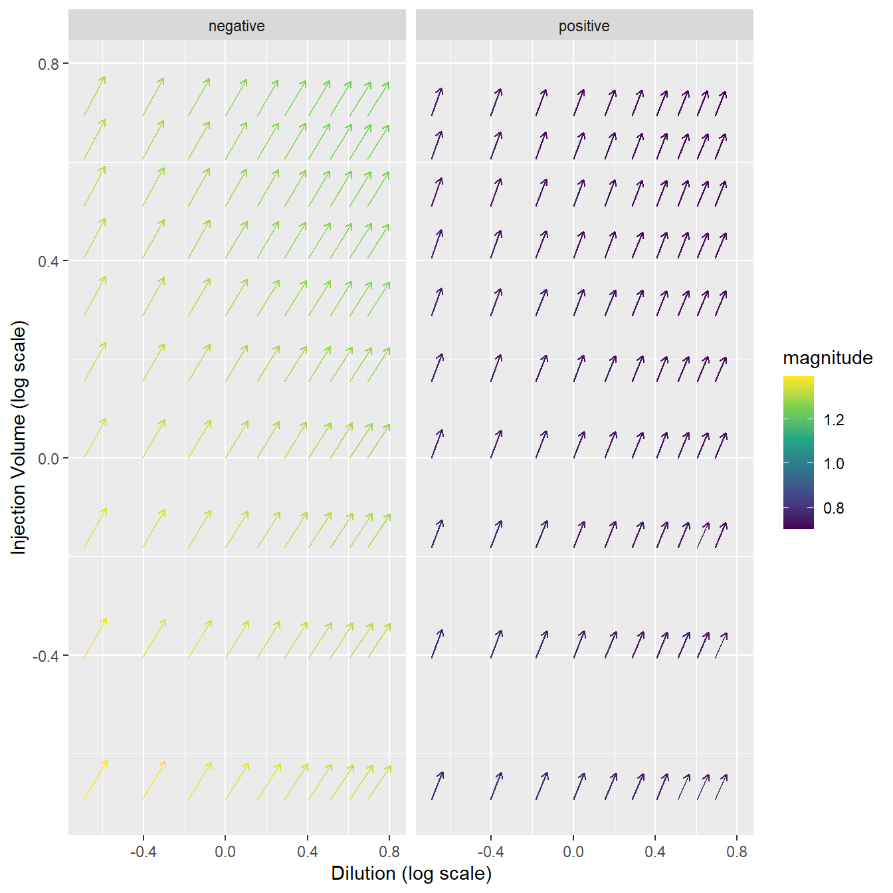
ggsave(filename = here::here(figures_dir, "simulations-slope.png"),
plot = p91, width = 12, height = 16, dpi = 600, units = "cm")
gc() used (Mb) gc trigger (Mb) max used (Mb)
Ncells 3213342 171.7 6711817 358.5 6711817 358.5
Vcells 9529413663 72703.7 13985540259 106701.3 11541837407 88057.3dilution_factor_sim = seq(0.25, 1, length.out = 10)
injection_volume_sim = seq(2.5, 10, length.out = 10)
posneg = c("positive", "negative")
performance_simulation <- decision_to_plot_gq$draws(format = "draws_df") %>%
tidybayes::spread_draws(
SVR[i, j, c],
pSVR[i, j, c]) %>%
ungroup()
design_summary <- performance_simulation %>%
group_by(i, j, c) %>%
summarise(
mean_metric = mean(SVR),
proportion_metabolites = mean(pSVR),
.groups = "drop")
design_summary$dilution_factor_sim = dilution_factor_sim[design_summary$i]
design_summary$injection_volume_sim = injection_volume_sim[design_summary$j]
design_summary$ionization_mode <- factor(
posneg[design_summary$c],
levels = c("positive", "negative"))
svr_breaks <- seq(
floor(min(design_summary$mean_metric, na.rm = TRUE)),
ceiling(max(design_summary$mean_metric, na.rm = TRUE)),
length.out = 11)
psvr_breaks <- seq(
floor(min(design_summary$proportion_metabolites, na.rm = TRUE) * 10) / 10,
ceiling(max(design_summary$proportion_metabolites, na.rm = TRUE) * 10) / 10,
length.out = 11)
p_mean <- ggplot(
design_summary,
aes(x = dilution_factor_sim, y = injection_volume_sim, z = mean_metric)) +
geom_contour_filled(breaks = svr_breaks) +
facet_wrap(~ ionization_mode) +
labs(
x = "Dilution factor",
y = "Injection volume",
fill = "SVR") +
theme(strip.text = element_text(face = "bold"))
p_prop <- ggplot(
design_summary,
aes(x = dilution_factor_sim, y = injection_volume_sim, z = proportion_metabolites)) +
geom_contour_filled(breaks = psvr_breaks) +
facet_wrap(~ ionization_mode) +
labs(
x = "Dilution factor",
y = "Injection volume",
fill = "pSVR") +
theme(strip.text = element_text(face = "bold"))
title_svr <- ggplot() +
theme_void() +
labs(title = "Sensitivity-to-variability ratio") +
theme(plot.title = element_text(face = "bold", hjust = 0.5, size = 13))
title_psvr <- ggplot() +
theme_void() +
labs(title = "Proportion of Features Quantifiable at Two-Fold Difference") +
theme(plot.title = element_text(face = "bold", hjust = 0.5, size = 13))
p_perf_2x2 <-
title_svr /
p_mean /
title_psvr /
p_prop +
plot_layout(
heights = c(0.08, 1, 0.08, 1),
guides = "collect") &
theme(legend.position = "right")
p_perf_2x2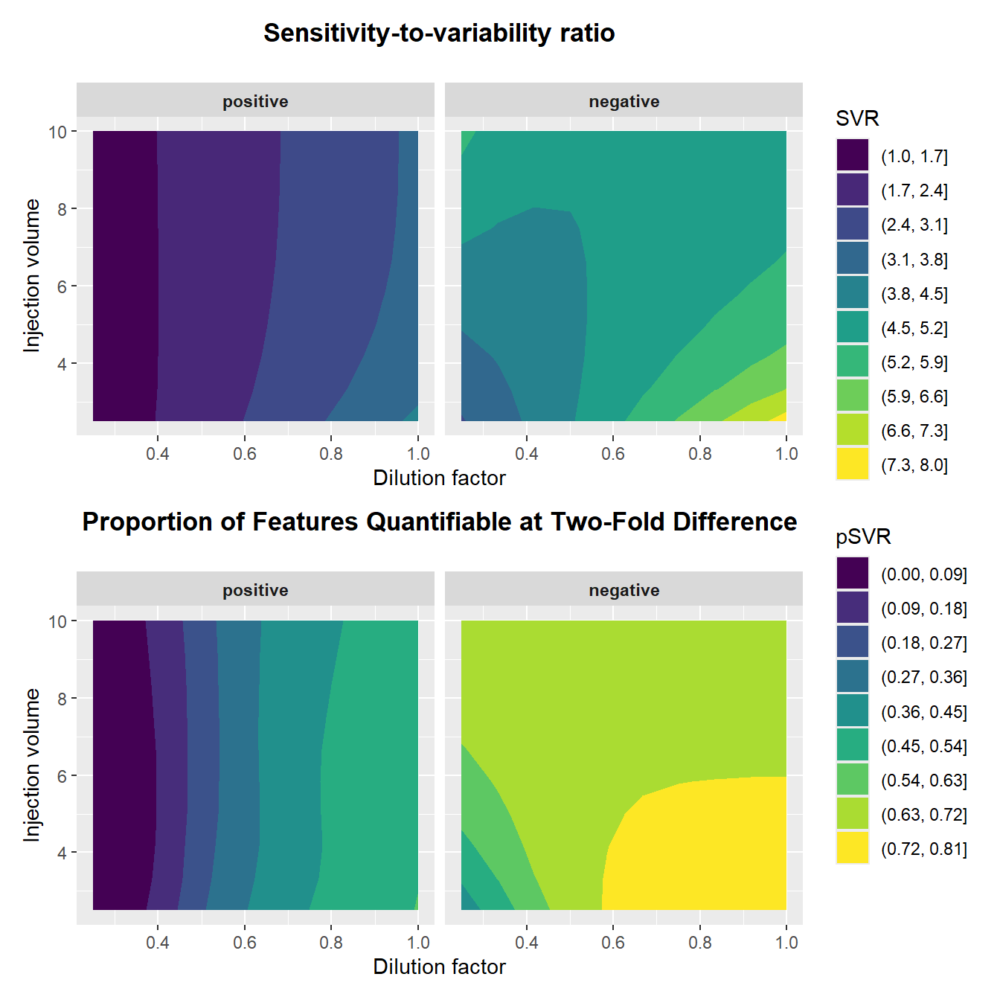
ggsave(
filename = here::here(figures_dir, "performance-metric-grid.png"),
plot = p_perf_2x2,
width = 16,
height = 16,
dpi = 600,
units = "cm")target_dilutions <- c(0.25, 0.5, 1.0)
target_injections <- c(2.5, 5, 10)
levels_new = c(
"Dil = 0.25, Inj = 10",
"Dil = 0.5, Inj = 10",
"Dil = 1, Inj = 10",
"Dil = 0.25, Inj = 5",
"Dil = 0.5, Inj = 5",
"Dil = 1, Inj = 5",
"Dil = 0.25, Inj = 2.5",
"Dil = 0.5, Inj = 2.5",
"Dil = 1, Inj = 2.5")
performance_subset <- decision_to_plot_gq$draws(format = "draws_df") %>%
tidybayes::spread_draws(
svrm[i, j, m]) %>%
ungroup()
performance_subset <- performance_subset %>%
mutate(ionization_mode = if_else(m <= 184,
"positive", "negative"))
performance_pos <- performance_subset %>%
dplyr::filter(ionization_mode == "positive")
performance_pos_hist = performance_pos %>%
group_by(i,j,m) %>%
summarise(mean_performance_metric = mean(svrm))
performance_pos_hist$dilution_factor = target_dilutions[performance_pos_hist$i]
performance_pos_hist$injection_volume = target_injections[performance_pos_hist$j]
performance_pos_hist <- performance_pos_hist %>%
mutate(
design_label = glue("Dil = {dilution_factor}, Inj = {injection_volume}"),
design_label = factor(design_label, levels = levels_new))
counts_pos <- performance_pos %>%
group_by(i,j,.draw) %>%
summarise(
n_total = n(),
n_above = sum(svrm > 2/log(2)),
prop_above = n_above/n_total,
.groups = "drop") %>%
group_by(i,j) %>%
summarise(
n_total = mean(n_total),
n_above = mean(n_above),
prop_above = mean(prop_above),
.groups = "drop") %>%
mutate(
label = paste0(round(n_above,0),
" (", percent(prop_above, accuracy = 1), ")"))
counts_pos$dilution_factor = target_dilutions[counts_pos$i]
counts_pos$injection_volume = target_injections[counts_pos$j]
counts_pos <- counts_pos %>%
mutate(
design_label = glue("Dil = {dilution_factor}, Inj = {injection_volume}"),
design_label = factor(design_label, levels = levels_new))
performance_histogram_pos <- ggplot(
performance_pos_hist,
aes(x = mean_performance_metric)) +
geom_histogram(bins = 30, alpha = 0.7, color = "black") +
geom_vline(xintercept = 2/log(2), linetype = "dashed", color = "red") +
facet_wrap(~ design_label, ncol = 3, scales = "fixed") +
geom_text(
data = counts_pos,
aes(x = -Inf, y = Inf, label = label),
hjust = -0.05, vjust = 1.1,
inherit.aes = FALSE,
size = 3) +
labs(
x = "Sensitivity-to-variability ratio",
y = "Number of metabolites",
title = "Positive ionization mode:\nperformance metric across metabolites")
performance_histogram_pos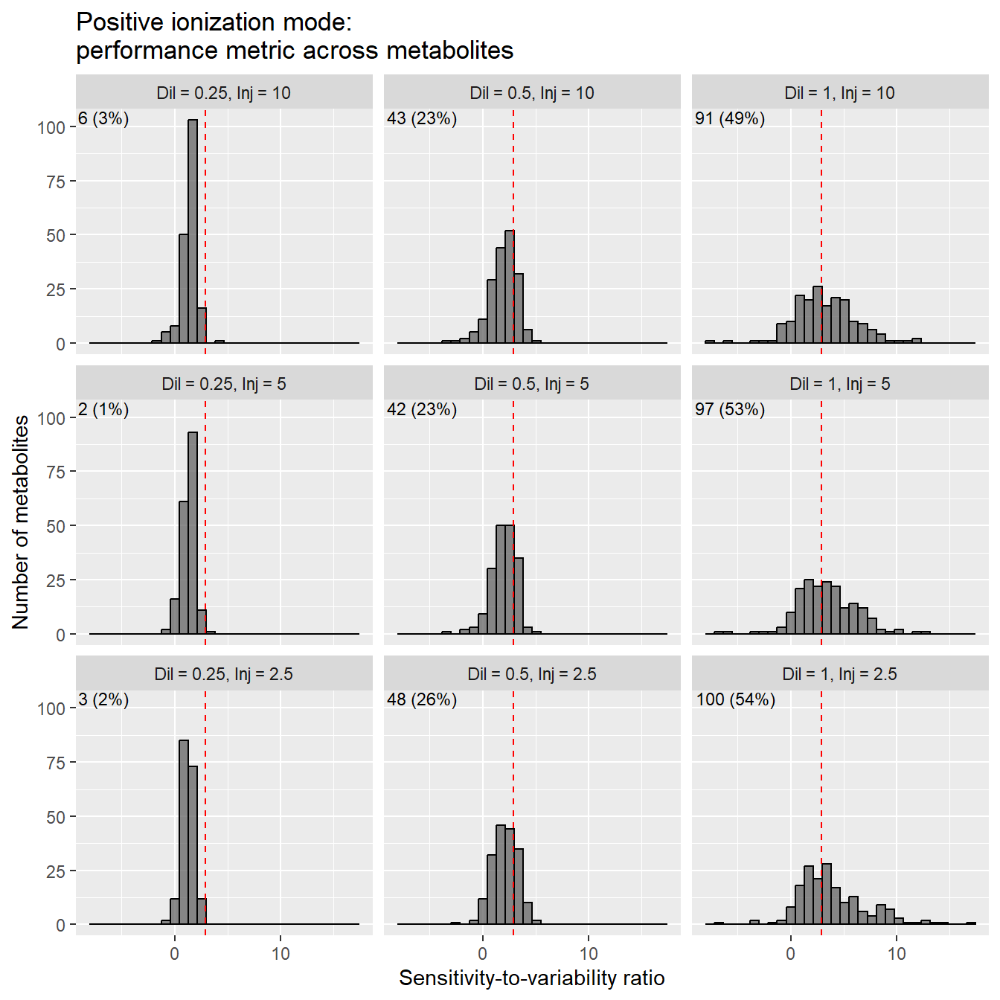
ggsave(
filename = here::here(figures_dir, "performance-histograms-positive.png"),
plot = performance_histogram_pos,
width = 18,
height = 12,
dpi = 600,
units = "cm"
)
performance_neg <- performance_subset %>%
filter(ionization_mode == "negative")
performance_neg_hist = performance_neg %>%
group_by(i,j,m) %>%
summarise(mean_performance_metric = mean(svrm))
performance_neg_hist$dilution_factor = target_dilutions[performance_neg_hist$i]
performance_neg_hist$injection_volume = target_injections[performance_neg_hist$j]
performance_neg_hist <- performance_neg_hist %>%
mutate(
design_label = glue("Dil = {dilution_factor}, Inj = {injection_volume}"),
design_label = factor(design_label, levels = levels_new))
counts_neg <- performance_neg %>%
group_by(i,j,.draw) %>%
summarise(
n_total = n(),
n_above = sum(svrm > 2/log(2)),
prop_above = n_above/n_total,
.groups = "drop") %>%
group_by(i,j) %>%
summarise(
n_total = mean(n_total),
n_above = mean(n_above),
prop_above = mean(prop_above),
.groups = "drop") %>%
mutate(
label = paste0(round(n_above,0),
" (", percent(prop_above, accuracy = 1), ")"))
counts_neg$dilution_factor = target_dilutions[counts_neg$i]
counts_neg$injection_volume = target_injections[counts_neg$j]
counts_neg <- counts_neg %>%
mutate(
design_label = glue("Dil = {dilution_factor}, Inj = {injection_volume}"),
design_label = factor(design_label, levels = levels_new))
performance_histogram_neg <- ggplot(
performance_neg_hist,
aes(x = mean_performance_metric)) +
geom_histogram(bins = 30, alpha = 0.7, color = "black") +
geom_vline(xintercept = 2/log(2), linetype = "dashed", color = "red") +
facet_wrap(~ design_label, ncol = 3, scales = "fixed") +
geom_text(
data = counts_neg,
aes(x = -Inf, y = Inf, label = label),
hjust = -0.05, vjust = 1.1,
inherit.aes = FALSE,
size = 3) +
labs(
x = "Sensitivity-to-variability ratio",
y = "Number of metabolites",
title = "Negative ionization mode:\nperformance metric across metabolites")
performance_histogram_neg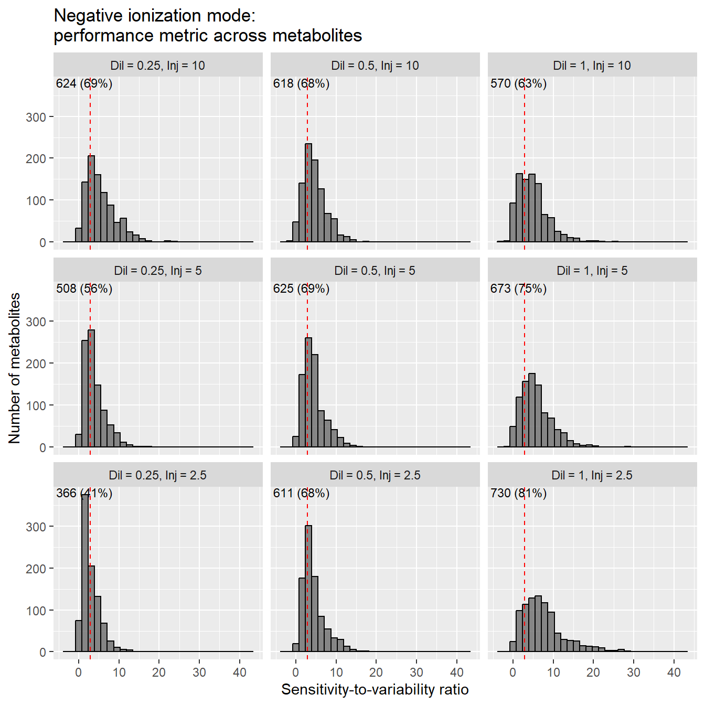
ggsave(
filename = here::here(figures_dir, "performance-histograms-negative.png"),
plot = performance_histogram_neg,
width = 18,
height = 12,
dpi = 600,
units = "cm"
)sessionInfo()R version 4.3.3 (2024-02-29 ucrt)
Platform: x86_64-w64-mingw32/x64 (64-bit)
Running under: Windows 10 x64 (build 19045)
Matrix products: default
locale:
[1] LC_COLLATE=English_United Kingdom.utf8
[2] LC_CTYPE=English_United Kingdom.utf8
[3] LC_MONETARY=English_United Kingdom.utf8
[4] LC_NUMERIC=C
[5] LC_TIME=English_United Kingdom.utf8
time zone: Europe/Warsaw
tzcode source: internal
attached base packages:
[1] stats graphics grDevices utils datasets methods base
other attached packages:
[1] scales_1.3.0 mrgmisc_0.2.2 GGally_2.2.1 tidybayes_3.0.7
[5] posterior_1.6.1 gridExtra_2.3 cmdstanr_0.8.1 here_1.0.1
[9] whisker_0.4.1 glue_1.8.0 lubridate_1.9.4 forcats_1.0.0
[13] stringr_1.5.1 purrr_1.0.4 readr_2.1.5 tidyr_1.3.1
[17] tibble_3.2.1 tidyverse_2.0.0 data.table_1.17.0 knitr_1.50
[21] naniar_1.1.0 patchwork_1.3.0 ggplot2_3.5.1 dplyr_1.1.4
[25] bbr.bayes_0.2.0 bbr_1.10.0
loaded via a namespace (and not attached):
[1] svUnit_1.0.6 tidyselect_1.2.1 viridisLite_0.4.2
[4] farver_2.1.2 fastmap_1.2.0 tensorA_0.36.2.1
[7] digest_0.6.37 timechange_0.3.0 lifecycle_1.0.4
[10] processx_3.8.6 magrittr_2.0.3 compiler_4.3.3
[13] rlang_1.1.5 tools_4.3.3 utf8_1.2.4
[16] yaml_2.3.10 labeling_0.4.3 bit_4.6.0
[19] plyr_1.8.9 RColorBrewer_1.1-3 abind_1.4-8
[22] withr_3.0.2 grid_4.3.3 diffobj_0.3.5
[25] colorspace_2.1-1 ggridges_0.5.6 isoband_0.2.7
[28] cli_3.6.4 rmarkdown_2.29 crayon_1.5.3
[31] ragg_1.3.3 generics_0.1.3 rstudioapi_0.17.1
[34] reshape2_1.4.4 tzdb_0.5.0 bayesplot_1.11.1
[37] parallel_4.3.3 matrixStats_1.5.0 vctrs_0.6.5
[40] jsonlite_1.9.1 hms_1.1.3 arrayhelpers_1.1-0
[43] bit64_4.6.0-1 visdat_0.6.0 systemfonts_1.2.1
[46] ggdist_3.3.2 ggstats_0.9.0 ps_1.9.0
[49] distributional_0.5.0 stringi_1.8.4 gtable_0.3.6
[52] munsell_0.5.1 pillar_1.10.1 htmltools_0.5.8.1
[55] R6_2.6.1 textshaping_1.0.0 rprojroot_2.0.4
[58] vroom_1.6.5 evaluate_1.0.3 lattice_0.22-6
[61] backports_1.5.0 Rcpp_1.0.14 coda_0.19-4.1
[64] checkmate_2.3.2 xfun_0.51 fs_1.6.5
[67] pkgconfig_2.0.3